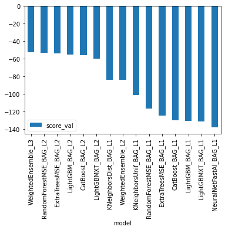
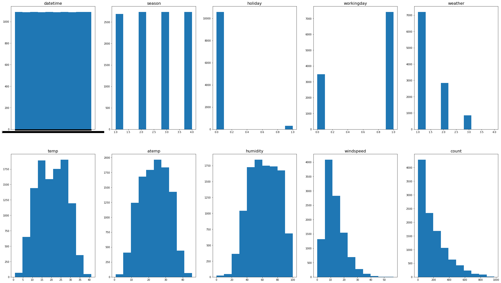
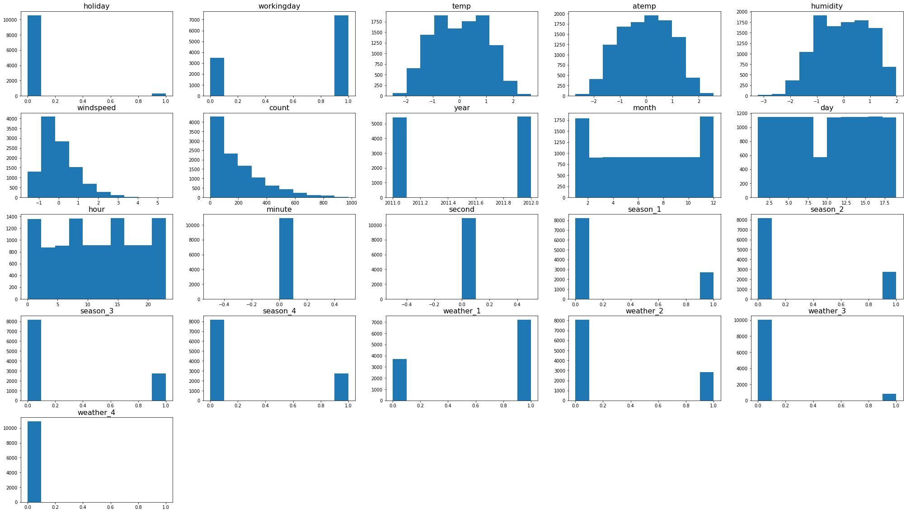
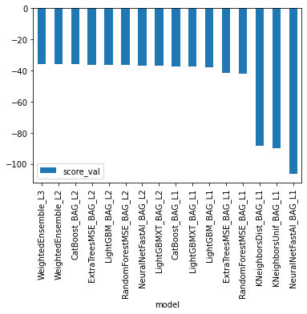
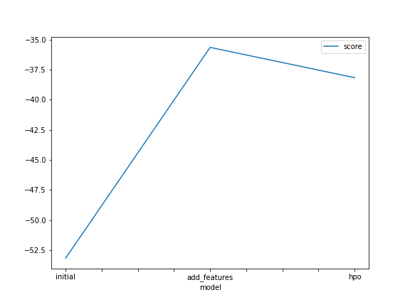
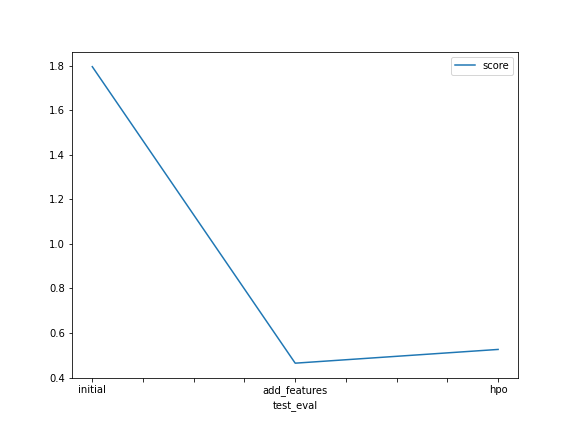

In this project, you'll use the AutoGluon library to train several models for the Bike Sharing Demand competition in Kaggle. You will be using Tabular Prediction to fit data from CSV files provided by the competition.
!pip install -U pip
!pip install -U setuptools wheel
!pip install -U "mxnet<2.0.0"
!pip install bokeh==2.0.1
!pip install autogluon --no-cache-dir
# Without --no-cache-dir, smaller aws instances may have trouble installingLooking in indexes: https://pypi.org/simple, https://us-python.pkg.dev/colab-wheels/public/simple/
Requirement already satisfied: pip in /usr/local/lib/python3.8/dist-packages (21.1.3)
Collecting pip
Downloading pip-22.3.1-py3-none-any.whl (2.1 MB)
pting uninstall: pip
Found existing installation: pip 21.1.3
Uninstalling pip-21.1.3:
Successfully uninstalled pip-21.1.3
Successfully installed pip-22.3.1
Looking in indexes: https://pypi.org/simple, https://us-python.pkg.dev/colab-wheels/public/simple/
Requirement already satisfied: setuptools in /usr/local/lib/python3.8/dist-packages (57.4.0)
Collecting setuptools
Downloading setuptools-65.6.3-py3-none-any.whl (1.2 MB)
━━━━━━━━━━━━━━━━━━━━━━━━━━━━━━━━━━━━━━━━ 1.2/1.2 MB 34.7 MB/s eta 0:00:00
ent already satisfied: wheel in /usr/local/lib/python3.8/dist-packages (0.38.4)
Installing collected packages: setuptools
Attempting uninstall: setuptools
Found existing installation: setuptools 57.4.0
Uninstalling setuptools-57.4.0:
Successfully uninstalled setuptools-57.4.0
ERROR: pip's dependency resolver does not currently take into account all the packages that are installed. This behaviour is the source of the following dependency conflicts.
ipython 7.9.0 requires jedi>=0.10, which is not installed.
Successfully installed setuptools-65.6.3
WARNING: Running pip as the 'root' user can result in broken permissions and conflicting behaviour with the system package manager. It is recommended to use a virtual environment instead: https://pip.pypa.io/warnings/venv
Looking in indexes: https://pypi.org/simple, https://us-python.pkg.dev/colab-wheels/public/simple/
Collecting mxnet<2.0.0
Downloading mxnet-1.9.1-py3-none-manylinux2014_x86_64.whl (49.1 MB)
━━━━━━━━━━━━━━━━━━━━━━━━━━━━━━━━━━━━━━━━ 49.1/49.1 MB 13.9 MB/s eta 0:00:00
ent already satisfied: requests<3,>=2.20.0 in /usr/local/lib/python3.8/dist-packages (from mxnet<2.0.0) (2.23.0)
Requirement already satisfied: numpy<2.0.0,>1.16.0 in /usr/local/lib/python3.8/dist-packages (from mxnet<2.0.0) (1.21.6)
Collecting graphviz<0.9.0,>=0.8.1
Downloading graphviz-0.8.4-py2.py3-none-any.whl (16 kB)
Requirement already satisfied: chardet<4,>=3.0.2 in /usr/local/lib/python3.8/dist-packages (from requests<3,>=2.20.0->mxnet<2.0.0) (3.0.4)
Requirement already satisfied: idna<3,>=2.5 in /usr/local/lib/python3.8/dist-packages (from requests<3,>=2.20.0->mxnet<2.0.0) (2.10)
Requirement already satisfied: urllib3!=1.25.0,!=1.25.1,<1.26,>=1.21.1 in /usr/local/lib/python3.8/dist-packages (from requests<3,>=2.20.0->mxnet<2.0.0) (1.24.3)
Requirement already satisfied: certifi>=2017.4.17 in /usr/local/lib/python3.8/dist-packages (from requests<3,>=2.20.0->mxnet<2.0.0) (2022.12.7)
Installing collected packages: graphviz, mxnet
Attempting uninstall: graphviz
Found existing installation: graphviz 0.10.1
Uninstalling graphviz-0.10.1:
Successfully uninstalled graphviz-0.10.1
Successfully installed graphviz-0.8.4 mxnet-1.9.1
WARNING: Running pip as the 'root' user can result in broken permissions and conflicting behaviour with the system package manager. It is recommended to use a virtual environment instead: https://pip.pypa.io/warnings/venv
Looking in indexes: https://pypi.org/simple, https://us-python.pkg.dev/colab-wheels/public/simple/
Collecting bokeh==2.0.1
Downloading bokeh-2.0.1.tar.gz (8.6 MB)
━━━━━━━━━━━━━━━━━━━━━━━━━━━━━━━━━━━━━━━━ 8.6/8.6 MB 15.1 MB/s eta 0:00:00
etadata (setup.py) ... ent already satisfied: PyYAML>=3.10 in /usr/local/lib/python3.8/dist-packages (from bokeh==2.0.1) (6.0)
Requirement already satisfied: python-dateutil>=2.1 in /usr/local/lib/python3.8/dist-packages (from bokeh==2.0.1) (2.8.2)
Requirement already satisfied: Jinja2>=2.7 in /usr/local/lib/python3.8/dist-packages (from bokeh==2.0.1) (2.11.3)
Requirement already satisfied: numpy>=1.11.3 in /usr/local/lib/python3.8/dist-packages (from bokeh==2.0.1) (1.21.6)
Requirement already satisfied: pillow>=4.0 in /usr/local/lib/python3.8/dist-packages (from bokeh==2.0.1) (7.1.2)
Requirement already satisfied: packaging>=16.8 in /usr/local/lib/python3.8/dist-packages (from bokeh==2.0.1) (21.3)
Requirement already satisfied: tornado>=5 in /usr/local/lib/python3.8/dist-packages (from bokeh==2.0.1) (6.0.4)
Requirement already satisfied: typing_extensions>=3.7.4 in /usr/local/lib/python3.8/dist-packages (from bokeh==2.0.1) (4.4.0)
Requirement already satisfied: MarkupSafe>=0.23 in /usr/local/lib/python3.8/dist-packages (from Jinja2>=2.7->bokeh==2.0.1) (2.0.1)
Requirement already satisfied: pyparsing!=3.0.5,>=2.0.2 in /usr/local/lib/python3.8/dist-packages (from packaging>=16.8->bokeh==2.0.1) (3.0.9)
Requirement already satisfied: six>=1.5 in /usr/local/lib/python3.8/dist-packages (from python-dateutil>=2.1->bokeh==2.0.1) (1.15.0)
Building wheels for collected packages: bokeh
Building wheel for bokeh (setup.py) ... e=bokeh-2.0.1-py3-none-any.whl size=9080017 sha256=2b4c81b605988a82f1211acc0af69e54b841a3aa277647c774451c54ed4906b6
Stored in directory: /root/.cache/pip/wheels/df/5e/9c/8bd156f0e272ecafaf8084bf6bd69ccb317e6fe6105edba7b2
Successfully built bokeh
Installing collected packages: bokeh
Attempting uninstall: bokeh
Found existing installation: bokeh 2.3.3
Uninstalling bokeh-2.3.3:
Successfully uninstalled bokeh-2.3.3
ERROR: pip's dependency resolver does not currently take into account all the packages that are installed. This behaviour is the source of the following dependency conflicts.
panel 0.12.1 requires bokeh<2.4.0,>=2.3.0, but you have bokeh 2.0.1 which is incompatible.
Successfully installed bokeh-2.0.1
WARNING: Running pip as the 'root' user can result in broken permissions and conflicting behaviour with the system package manager. It is recommended to use a virtual environment instead: https://pip.pypa.io/warnings/venv
Looking in indexes: https://pypi.org/simple, https://us-python.pkg.dev/colab-wheels/public/simple/
Collecting autogluon
Downloading autogluon-0.6.1-py3-none-any.whl (9.8 kB)
Collecting autogluon.core[all]==0.6.1
Downloading autogluon.core-0.6.1-py3-none-any.whl (226 kB)
━━━━━━━━━━━━━━━━━━━━━━━━━━━━━━━━━━━━━━ 226.6/226.6 kB 26.0 MB/s eta 0:00:00
━━━━━━━━━━━━━━━━━━━━━━━━━━━━━━━━━━━━━━━ 49.8/49.8 kB 176.7 MB/s eta 0:00:00
━━━━━━━━━━━━━━━━━━━━━━━━━━━━━━━━━━━━━━━ 62.1/62.1 kB 196.7 MB/s eta 0:00:00
ultimodal==0.6.1
Downloading autogluon.multimodal-0.6.1-py3-none-any.whl (289 kB)
━━━━━━━━━━━━━━━━━━━━━━━━━━━━━━━━━━━━━ 289.7/289.7 kB 220.0 MB/s eta 0:00:00
━━━━━━━━━━━━━━━━━━━━━━━━━━━━━━━━━━━━━━━ 60.0/60.0 kB 200.6 MB/s eta 0:00:00
━━━━━━━━━━━━━━━━━━━━━━━━━━━━━━━━━━━━━ 286.0/286.0 kB 291.6 MB/s eta 0:00:00
eseries[all]==0.6.1
Downloading autogluon.timeseries-0.6.1-py3-none-any.whl (103 kB)
━━━━━━━━━━━━━━━━━━━━━━━━━━━━━━━━━━━━━ 103.0/103.0 kB 218.1 MB/s eta 0:00:00
ent already satisfied: matplotlib in /usr/local/lib/python3.8/dist-packages (from autogluon.core[all]==0.6.1->autogluon) (3.2.2)
Collecting autogluon.common==0.6.1
Downloading autogluon.common-0.6.1-py3-none-any.whl (41 kB)
━━━━━━━━━━━━━━━━━━━━━━━━━━━━━━━━━━━━━━━ 41.5/41.5 kB 151.3 MB/s eta 0:00:00
ent already satisfied: scikit-learn<1.2,>=1.0.0 in /usr/local/lib/python3.8/dist-packages (from autogluon.core[all]==0.6.1->autogluon) (1.0.2)
Collecting boto3
Downloading boto3-1.26.41-py3-none-any.whl (132 kB)
━━━━━━━━━━━━━━━━━━━━━━━━━━━━━━━━━━━━━ 132.7/132.7 kB 260.8 MB/s eta 0:00:00
ent already satisfied: scipy<1.10.0,>=1.5.4 in /usr/local/lib/python3.8/dist-packages (from autogluon.core[all]==0.6.1->autogluon) (1.7.3)
Requirement already satisfied: requests in /usr/local/lib/python3.8/dist-packages (from autogluon.core[all]==0.6.1->autogluon) (2.23.0)
Collecting dask<=2021.11.2,>=2021.09.1
Downloading dask-2021.11.2-py3-none-any.whl (1.0 MB)
━━━━━━━━━━━━━━━━━━━━━━━━━━━━━━━━━━━━━━━━ 1.0/1.0 MB 274.9 MB/s eta 0:00:00
ent already satisfied: numpy<1.24,>=1.21 in /usr/local/lib/python3.8/dist-packages (from autogluon.core[all]==0.6.1->autogluon) (1.21.6)
Requirement already satisfied: tqdm>=4.38.0 in /usr/local/lib/python3.8/dist-packages (from autogluon.core[all]==0.6.1->autogluon) (4.64.1)
Collecting distributed<=2021.11.2,>=2021.09.1
Downloading distributed-2021.11.2-py3-none-any.whl (802 kB)
━━━━━━━━━━━━━━━━━━━━━━━━━━━━━━━━━━━━━ 802.2/802.2 kB 303.4 MB/s eta 0:00:00
ent already satisfied: pandas!=1.4.0,<1.6,>=1.2.5 in /usr/local/lib/python3.8/dist-packages (from autogluon.core[all]==0.6.1->autogluon) (1.3.5)
Collecting ray<2.1,>=2.0
Downloading ray-2.0.1-cp38-cp38-manylinux2014_x86_64.whl (60.2 MB)
━━━━━━━━━━━━━━━━━━━━━━━━━━━━━━━━━━━━━━━ 60.2/60.2 MB 214.5 MB/s eta 0:00:00
━━━━━━━━━━━━━━━━━━━━━━━━━━━━━━━━━━━━━━━━ 1.6/1.6 MB 308.7 MB/s eta 0:00:00
anylinux_2_12_x86_64.manylinux2010_x86_64.manylinux_2_17_x86_64.manylinux2014_x86_64.whl (280 kB)
━━━━━━━━━━━━━━━━━━━━━━━━━━━━━━━━━━━━━ 280.2/280.2 kB 310.4 MB/s eta 0:00:00
art-open<5.3.0,>=5.2.1
Downloading smart_open-5.2.1-py3-none-any.whl (58 kB)
━━━━━━━━━━━━━━━━━━━━━━━━━━━━━━━━━━━━━━━ 58.6/58.6 kB 216.3 MB/s eta 0:00:00
im<=0.2.1,>0.1.5
Downloading openmim-0.2.1-py2.py3-none-any.whl (49 kB)
━━━━━━━━━━━━━━━━━━━━━━━━━━━━━━━━━━━━━━━ 49.7/49.7 kB 231.5 MB/s eta 0:00:00
age<0.20.0,>=0.19.1
Downloading scikit_image-0.19.3-cp38-cp38-manylinux_2_17_x86_64.manylinux2014_x86_64.whl (14.0 MB)
━━━━━━━━━━━━━━━━━━━━━━━━━━━━━━━━━━━━━━━ 14.0/14.0 MB 252.7 MB/s eta 0:00:00
anylinux1_x86_64.whl (19.1 MB)
━━━━━━━━━━━━━━━━━━━━━━━━━━━━━━━━━━━━━━━ 19.1/19.1 MB 194.0 MB/s eta 0:00:00
anylinux1_x86_64.whl (1.9 MB)
━━━━━━━━━━━━━━━━━━━━━━━━━━━━━━━━━━━━━━━━ 1.9/1.9 MB 299.5 MB/s eta 0:00:00
ent already satisfied: text-unidecode<=1.3 in /usr/local/lib/python3.8/dist-packages (from autogluon.multimodal==0.6.1->autogluon) (1.3)
Collecting seqeval<=1.2.2
Downloading seqeval-1.2.2.tar.gz (43 kB)
━━━━━━━━━━━━━━━━━━━━━━━━━━━━━━━━━━━━━━━ 43.6/43.6 kB 197.4 MB/s eta 0:00:00
etadata (setup.py) ... ━━━━━━━━━━━━━━━━━━━━━━━━━━━━━━━━━━━━━ 708.1/708.1 kB 326.8 MB/s eta 0:00:00
etric-learning<1.4.0,>=1.3.0
Downloading pytorch_metric_learning-1.3.2-py3-none-any.whl (109 kB)
━━━━━━━━━━━━━━━━━━━━━━━━━━━━━━━━━━━━━ 109.4/109.4 kB 240.2 MB/s eta 0:00:00
━━━━━━━━━━━━━━━━━━━━━━━━━━━━━━━━━━━━━━━ 72.9/72.9 kB 244.6 MB/s eta 0:00:00
m<0.7.0
Downloading timm-0.6.12-py3-none-any.whl (549 kB)
━━━━━━━━━━━━━━━━━━━━━━━━━━━━━━━━━━━━━ 549.1/549.1 kB 285.3 MB/s eta 0:00:00
egaconf<2.2.0,>=2.1.1
Downloading omegaconf-2.1.2-py3-none-any.whl (74 kB)
━━━━━━━━━━━━━━━━━━━━━━━━━━━━━━━━━━━━━━━ 74.7/74.7 kB 266.6 MB/s eta 0:00:00
ent already satisfied: defusedxml<=0.7.1,>=0.7.1 in /usr/local/lib/python3.8/dist-packages (from autogluon.multimodal==0.6.1->autogluon) (0.7.1)
Collecting nlpaug<=1.1.10,>=1.1.10
Downloading nlpaug-1.1.10-py3-none-any.whl (410 kB)
━━━━━━━━━━━━━━━━━━━━━━━━━━━━━━━━━━━━━ 410.8/410.8 kB 292.3 MB/s eta 0:00:00
ent already satisfied: jsonschema<=4.8.0 in /usr/local/lib/python3.8/dist-packages (from autogluon.multimodal==0.6.1->autogluon) (4.3.3)
Collecting torchmetrics<0.9.0,>=0.8.0
Downloading torchmetrics-0.8.2-py3-none-any.whl (409 kB)
━━━━━━━━━━━━━━━━━━━━━━━━━━━━━━━━━━━━━ 409.8/409.8 kB 265.5 MB/s eta 0:00:00
ers<4.24.0,>=4.23.0
Downloading transformers-4.23.1-py3-none-any.whl (5.3 MB)
━━━━━━━━━━━━━━━━━━━━━━━━━━━━━━━━━━━━━━━━ 5.3/5.3 MB 278.6 MB/s eta 0:00:00
anylinux_2_17_x86_64.manylinux2014_x86_64.whl (3.2 MB)
━━━━━━━━━━━━━━━━━━━━━━━━━━━━━━━━━━━━━━━━ 3.2/3.2 MB 330.6 MB/s eta 0:00:00
anylinux1_x86_64.whl (776.3 MB)
━━━━━━━━━━━━━━━━━━━━━━━━━━━━━━━━━━━━━ 776.3/776.3 MB 201.6 MB/s eta 0:00:00
━━━━━━━━━━━━━━━━━━━━━━━━━━━━━━━━━━━━━ 148.8/148.8 kB 283.3 MB/s eta 0:00:00
ent already satisfied: nltk<4.0.0,>=3.4.5 in /usr/local/lib/python3.8/dist-packages (from autogluon.multimodal==0.6.1->autogluon) (3.7)
Collecting nptyping<1.5.0,>=1.4.4
Downloading nptyping-1.4.4-py3-none-any.whl (31 kB)
Collecting fairscale<=0.4.6,>=0.4.5
Downloading fairscale-0.4.6.tar.gz (248 kB)
━━━━━━━━━━━━━━━━━━━━━━━━━━━━━━━━━━━━━ 248.2/248.2 kB 281.2 MB/s eta 0:00:00
ents to build wheel ... etadata (pyproject.toml) ... entations<=1.2.0,>=1.1.0
Downloading albumentations-1.2.0-py3-none-any.whl (113 kB)
━━━━━━━━━━━━━━━━━━━━━━━━━━━━━━━━━━━━━ 113.5/113.5 kB 228.3 MB/s eta 0:00:00
anylinux_2_17_x86_64.manylinux2014_x86_64.whl (1.3 MB)
━━━━━━━━━━━━━━━━━━━━━━━━━━━━━━━━━━━━━━━━ 1.3/1.3 MB 272.5 MB/s eta 0:00:00
ent already satisfied: networkx<3.0,>=2.3 in /usr/local/lib/python3.8/dist-packages (from autogluon.tabular[all]==0.6.1->autogluon) (2.8.8)
Collecting xgboost<1.8,>=1.6
Downloading xgboost-1.7.2-py3-none-manylinux2014_x86_64.whl (193.6 MB)
━━━━━━━━━━━━━━━━━━━━━━━━━━━━━━━━━━━━━ 193.6/193.6 MB 107.5 MB/s eta 0:00:00
ent already satisfied: fastai<2.8,>=2.3.1 in /usr/local/lib/python3.8/dist-packages (from autogluon.tabular[all]==0.6.1->autogluon) (2.7.10)
Collecting catboost<1.2,>=1.0
Downloading catboost-1.1.1-cp38-none-manylinux1_x86_64.whl (76.6 MB)
━━━━━━━━━━━━━━━━━━━━━━━━━━━━━━━━━━━━━━━ 76.6/76.6 MB 171.4 MB/s eta 0:00:00
<3.4,>=3.3
Downloading lightgbm-3.3.3-py3-none-manylinux1_x86_64.whl (2.0 MB)
━━━━━━━━━━━━━━━━━━━━━━━━━━━━━━━━━━━━━━━━ 2.0/2.0 MB 211.8 MB/s eta 0:00:00
odels~=0.13.0
Downloading statsmodels-0.13.5-cp38-cp38-manylinux_2_17_x86_64.manylinux2014_x86_64.whl (9.9 MB)
━━━━━━━━━━━━━━━━━━━━━━━━━━━━━━━━━━━━━━━━ 9.9/9.9 MB 89.0 MB/s eta 0:00:00
ent already satisfied: joblib~=1.1 in /usr/local/lib/python3.8/dist-packages (from autogluon.timeseries[all]==0.6.1->autogluon) (1.2.0)
Collecting psutil<6,>=5.7.3
Downloading psutil-5.8.0-cp38-cp38-manylinux2010_x86_64.whl (296 kB)
━━━━━━━━━━━━━━━━━━━━━━━━━━━━━━━━━━━━━ 296.0/296.0 kB 129.5 MB/s eta 0:00:00
━━━━━━━━━━━━━━━━━━━━━━━━━━━━━━━━━━━━━━━━ 1.0/1.0 MB 213.5 MB/s eta 0:00:00
e<0.14,>=0.13.1
Downloading sktime-0.13.4-py3-none-any.whl (7.0 MB)
━━━━━━━━━━━━━━━━━━━━━━━━━━━━━━━━━━━━━━━━ 7.0/7.0 MB 183.7 MB/s eta 0:00:00
darima~=1.8.2
Downloading pmdarima-1.8.5-cp38-cp38-manylinux_2_17_x86_64.manylinux2014_x86_64.manylinux_2_24_x86_64.whl (1.5 MB)
━━━━━━━━━━━━━━━━━━━━━━━━━━━━━━━━━━━━━━━━ 1.5/1.5 MB 201.6 MB/s eta 0:00:00
━━━━━━━━━━━━━━━━━━━━━━━━━━━━━━━━━━━━━━━ 43.8/43.8 kB 199.2 MB/s eta 0:00:00
━━━━━━━━━━━━━━━━━━━━━━━━━━━━━━━━━━━━━━━━ 1.3/1.3 MB 203.7 MB/s eta 0:00:00
ent already satisfied: setuptools in /usr/local/lib/python3.8/dist-packages (from autogluon.common==0.6.1->autogluon.core[all]==0.6.1->autogluon) (65.6.3)
Requirement already satisfied: packaging>=20.0 in /usr/local/lib/python3.8/dist-packages (from accelerate<0.14,>=0.9->autogluon.multimodal==0.6.1->autogluon) (21.3)
Requirement already satisfied: pyyaml in /usr/local/lib/python3.8/dist-packages (from accelerate<0.14,>=0.9->autogluon.multimodal==0.6.1->autogluon) (6.0)
Requirement already satisfied: qudida>=0.0.4 in /usr/local/lib/python3.8/dist-packages (from albumentations<=1.2.0,>=1.1.0->autogluon.multimodal==0.6.1->autogluon) (0.0.4)
Requirement already satisfied: opencv-python-headless>=4.1.1 in /usr/local/lib/python3.8/dist-packages (from albumentations<=1.2.0,>=1.1.0->autogluon.multimodal==0.6.1->autogluon) (4.6.0.66)
Collecting albumentations<=1.2.0,>=1.1.0
Downloading albumentations-1.1.0-py3-none-any.whl (102 kB)
━━━━━━━━━━━━━━━━━━━━━━━━━━━━━━━━━━━━━ 102.4/102.4 kB 179.0 MB/s eta 0:00:00
ent already satisfied: six in /usr/local/lib/python3.8/dist-packages (from catboost<1.2,>=1.0->autogluon.tabular[all]==0.6.1->autogluon) (1.15.0)
Requirement already satisfied: graphviz in /usr/local/lib/python3.8/dist-packages (from catboost<1.2,>=1.0->autogluon.tabular[all]==0.6.1->autogluon) (0.8.4)
Requirement already satisfied: plotly in /usr/local/lib/python3.8/dist-packages (from catboost<1.2,>=1.0->autogluon.tabular[all]==0.6.1->autogluon) (5.5.0)
Requirement already satisfied: fsspec>=0.6.0 in /usr/local/lib/python3.8/dist-packages (from dask<=2021.11.2,>=2021.09.1->autogluon.core[all]==0.6.1->autogluon) (2022.11.0)
Requirement already satisfied: cloudpickle>=1.1.1 in /usr/local/lib/python3.8/dist-packages (from dask<=2021.11.2,>=2021.09.1->autogluon.core[all]==0.6.1->autogluon) (1.5.0)
Requirement already satisfied: partd>=0.3.10 in /usr/local/lib/python3.8/dist-packages (from dask<=2021.11.2,>=2021.09.1->autogluon.core[all]==0.6.1->autogluon) (1.3.0)
Requirement already satisfied: toolz>=0.8.2 in /usr/local/lib/python3.8/dist-packages (from dask<=2021.11.2,>=2021.09.1->autogluon.core[all]==0.6.1->autogluon) (0.12.0)
Requirement already satisfied: jinja2 in /usr/local/lib/python3.8/dist-packages (from distributed<=2021.11.2,>=2021.09.1->autogluon.core[all]==0.6.1->autogluon) (2.11.3)
Requirement already satisfied: tornado>=6.0.3 in /usr/local/lib/python3.8/dist-packages (from distributed<=2021.11.2,>=2021.09.1->autogluon.core[all]==0.6.1->autogluon) (6.0.4)
Requirement already satisfied: msgpack>=0.6.0 in /usr/local/lib/python3.8/dist-packages (from distributed<=2021.11.2,>=2021.09.1->autogluon.core[all]==0.6.1->autogluon) (1.0.4)
Requirement already satisfied: sortedcontainers!=2.0.0,!=2.0.1 in /usr/local/lib/python3.8/dist-packages (from distributed<=2021.11.2,>=2021.09.1->autogluon.core[all]==0.6.1->autogluon) (2.4.0)
Requirement already satisfied: click>=6.6 in /usr/local/lib/python3.8/dist-packages (from distributed<=2021.11.2,>=2021.09.1->autogluon.core[all]==0.6.1->autogluon) (7.1.2)
Requirement already satisfied: tblib>=1.6.0 in /usr/local/lib/python3.8/dist-packages (from distributed<=2021.11.2,>=2021.09.1->autogluon.core[all]==0.6.1->autogluon) (1.7.0)
Requirement already satisfied: zict>=0.1.3 in /usr/local/lib/python3.8/dist-packages (from distributed<=2021.11.2,>=2021.09.1->autogluon.core[all]==0.6.1->autogluon) (2.2.0)
Collecting huggingface-hub>=0.7.0
Downloading huggingface_hub-0.11.1-py3-none-any.whl (182 kB)
━━━━━━━━━━━━━━━━━━━━━━━━━━━━━━━━━━━━━ 182.4/182.4 kB 242.5 MB/s eta 0:00:00
ent already satisfied: dill in /usr/local/lib/python3.8/dist-packages (from evaluate<=0.3.0->autogluon.multimodal==0.6.1->autogluon) (0.3.6)
Collecting responses<0.19
Downloading responses-0.18.0-py3-none-any.whl (38 kB)
Collecting xxhash
Downloading xxhash-3.2.0-cp38-cp38-manylinux_2_17_x86_64.manylinux2014_x86_64.whl (213 kB)
━━━━━━━━━━━━━━━━━━━━━━━━━━━━━━━━━━━━━ 213.0/213.0 kB 183.2 MB/s eta 0:00:00
ultiprocess
Downloading multiprocess-0.70.14-py38-none-any.whl (132 kB)
━━━━━━━━━━━━━━━━━━━━━━━━━━━━━━━━━━━━━ 132.0/132.0 kB 259.8 MB/s eta 0:00:00
━━━━━━━━━━━━━━━━━━━━━━━━━━━━━━━━━━━━━ 452.9/452.9 kB 146.4 MB/s eta 0:00:00
ent already satisfied: fastcore<1.6,>=1.4.5 in /usr/local/lib/python3.8/dist-packages (from fastai<2.8,>=2.3.1->autogluon.tabular[all]==0.6.1->autogluon) (1.5.27)
Requirement already satisfied: fastdownload<2,>=0.0.5 in /usr/local/lib/python3.8/dist-packages (from fastai<2.8,>=2.3.1->autogluon.tabular[all]==0.6.1->autogluon) (0.0.7)
Requirement already satisfied: fastprogress>=0.2.4 in /usr/local/lib/python3.8/dist-packages (from fastai<2.8,>=2.3.1->autogluon.tabular[all]==0.6.1->autogluon) (1.0.3)
Requirement already satisfied: spacy<4 in /usr/local/lib/python3.8/dist-packages (from fastai<2.8,>=2.3.1->autogluon.tabular[all]==0.6.1->autogluon) (3.4.4)
Requirement already satisfied: pip in /usr/local/lib/python3.8/dist-packages (from fastai<2.8,>=2.3.1->autogluon.tabular[all]==0.6.1->autogluon) (22.3.1)
Collecting portalocker
Downloading portalocker-2.6.0-py2.py3-none-any.whl (15 kB)
Collecting yacs
Downloading yacs-0.1.8-py3-none-any.whl (14 kB)
Requirement already satisfied: opencv-python in /usr/local/lib/python3.8/dist-packages (from gluoncv<0.10.6,>=0.10.5->autogluon.vision==0.6.1->autogluon) (4.6.0.66)
Collecting autocfg
Downloading autocfg-0.0.8-py3-none-any.whl (13 kB)
Requirement already satisfied: pydantic~=1.7 in /usr/local/lib/python3.8/dist-packages (from gluonts~=0.11.0->autogluon.timeseries[all]==0.6.1->autogluon) (1.10.2)
Requirement already satisfied: typing-extensions~=4.0 in /usr/local/lib/python3.8/dist-packages (from gluonts~=0.11.0->autogluon.timeseries[all]==0.6.1->autogluon) (4.4.0)
Requirement already satisfied: future in /usr/local/lib/python3.8/dist-packages (from hyperopt<0.2.8,>=0.2.7->autogluon.core[all]==0.6.1->autogluon) (0.16.0)
Collecting py4j
Downloading py4j-0.10.9.7-py2.py3-none-any.whl (200 kB)
━━━━━━━━━━━━━━━━━━━━━━━━━━━━━━━━━━━━━ 200.5/200.5 kB 258.7 MB/s eta 0:00:00
ent already satisfied: importlib-resources>=1.4.0 in /usr/local/lib/python3.8/dist-packages (from jsonschema<=4.8.0->autogluon.multimodal==0.6.1->autogluon) (5.10.1)
Requirement already satisfied: pyrsistent!=0.17.0,!=0.17.1,!=0.17.2,>=0.14.0 in /usr/local/lib/python3.8/dist-packages (from jsonschema<=4.8.0->autogluon.multimodal==0.6.1->autogluon) (0.19.2)
Requirement already satisfied: attrs>=17.4.0 in /usr/local/lib/python3.8/dist-packages (from jsonschema<=4.8.0->autogluon.multimodal==0.6.1->autogluon) (22.1.0)
Requirement already satisfied: wheel in /usr/local/lib/python3.8/dist-packages (from lightgbm<3.4,>=3.3->autogluon.tabular[all]==0.6.1->autogluon) (0.38.4)
Requirement already satisfied: regex>=2021.8.3 in /usr/local/lib/python3.8/dist-packages (from nltk<4.0.0,>=3.4.5->autogluon.multimodal==0.6.1->autogluon) (2022.6.2)
Collecting typish>=1.7.0
Downloading typish-1.9.3-py3-none-any.whl (45 kB)
━━━━━━━━━━━━━━━━━━━━━━━━━━━━━━━━━━━━━━━ 45.1/45.1 kB 178.9 MB/s eta 0:00:00
e==4.8
Downloading antlr4-python3-runtime-4.8.tar.gz (112 kB)
━━━━━━━━━━━━━━━━━━━━━━━━━━━━━━━━━━━━━ 112.4/112.4 kB 260.0 MB/s eta 0:00:00
etadata (setup.py) ... odel-index
Downloading model_index-0.1.11-py3-none-any.whl (34 kB)
Collecting colorama
Downloading colorama-0.4.6-py2.py3-none-any.whl (25 kB)
Collecting rich
Downloading rich-13.0.0-py3-none-any.whl (238 kB)
━━━━━━━━━━━━━━━━━━━━━━━━━━━━━━━━━━━━━ 238.1/238.1 kB 310.5 MB/s eta 0:00:00
ent already satisfied: tabulate in /usr/local/lib/python3.8/dist-packages (from openmim<=0.2.1,>0.1.5->autogluon.multimodal==0.6.1->autogluon) (0.8.10)
Requirement already satisfied: pytz>=2017.3 in /usr/local/lib/python3.8/dist-packages (from pandas!=1.4.0,<1.6,>=1.2.5->autogluon.core[all]==0.6.1->autogluon) (2022.6)
Requirement already satisfied: python-dateutil>=2.7.3 in /usr/local/lib/python3.8/dist-packages (from pandas!=1.4.0,<1.6,>=1.2.5->autogluon.core[all]==0.6.1->autogluon) (2.8.2)
Requirement already satisfied: urllib3 in /usr/local/lib/python3.8/dist-packages (from pmdarima~=1.8.2->autogluon.timeseries[all]==0.6.1->autogluon) (1.24.3)
Requirement already satisfied: Cython!=0.29.18,>=0.29 in /usr/local/lib/python3.8/dist-packages (from pmdarima~=1.8.2->autogluon.timeseries[all]==0.6.1->autogluon) (0.29.32)
Collecting pyDeprecate>=0.3.1
Downloading pyDeprecate-0.3.2-py3-none-any.whl (10 kB)
Requirement already satisfied: tensorboard>=2.9.1 in /usr/local/lib/python3.8/dist-packages (from pytorch-lightning<1.8.0,>=1.7.4->autogluon.multimodal==0.6.1->autogluon) (2.9.1)
Requirement already satisfied: frozenlist in /usr/local/lib/python3.8/dist-packages (from ray<2.1,>=2.0->autogluon.core[all]==0.6.1->autogluon) (1.3.3)
Collecting grpcio<=1.43.0,>=1.32.0
Downloading grpcio-1.43.0-cp38-cp38-manylinux_2_17_x86_64.manylinux2014_x86_64.whl (4.1 MB)
━━━━━━━━━━━━━━━━━━━━━━━━━━━━━━━━━━━━━━━━ 4.1/4.1 MB 205.1 MB/s eta 0:00:00
━━━━━━━━━━━━━━━━━━━━━━━━━━━━━━━━━━━━━━━━ 8.8/8.8 MB 199.8 MB/s eta 0:00:00
ent already satisfied: filelock in /usr/local/lib/python3.8/dist-packages (from ray<2.1,>=2.0->autogluon.core[all]==0.6.1->autogluon) (3.8.2)
Requirement already satisfied: protobuf<4.0.0,>=3.15.3 in /usr/local/lib/python3.8/dist-packages (from ray<2.1,>=2.0->autogluon.core[all]==0.6.1->autogluon) (3.19.6)
Requirement already satisfied: aiosignal in /usr/local/lib/python3.8/dist-packages (from ray<2.1,>=2.0->autogluon.core[all]==0.6.1->autogluon) (1.3.1)
Collecting tensorboardX>=1.9
Downloading tensorboardX-2.5.1-py2.py3-none-any.whl (125 kB)
━━━━━━━━━━━━━━━━━━━━━━━━━━━━━━━━━━━━━ 125.4/125.4 kB 170.0 MB/s eta 0:00:00
ent already satisfied: idna<3,>=2.5 in /usr/local/lib/python3.8/dist-packages (from requests->autogluon.core[all]==0.6.1->autogluon) (2.10)
Requirement already satisfied: chardet<4,>=3.0.2 in /usr/local/lib/python3.8/dist-packages (from requests->autogluon.core[all]==0.6.1->autogluon) (3.0.4)
Requirement already satisfied: certifi>=2017.4.17 in /usr/local/lib/python3.8/dist-packages (from requests->autogluon.core[all]==0.6.1->autogluon) (2022.12.7)
Requirement already satisfied: tifffile>=2019.7.26 in /usr/local/lib/python3.8/dist-packages (from scikit-image<0.20.0,>=0.19.1->autogluon.multimodal==0.6.1->autogluon) (2022.10.10)
Requirement already satisfied: imageio>=2.4.1 in /usr/local/lib/python3.8/dist-packages (from scikit-image<0.20.0,>=0.19.1->autogluon.multimodal==0.6.1->autogluon) (2.9.0)
Requirement already satisfied: PyWavelets>=1.1.1 in /usr/local/lib/python3.8/dist-packages (from scikit-image<0.20.0,>=0.19.1->autogluon.multimodal==0.6.1->autogluon) (1.4.1)
Requirement already satisfied: threadpoolctl>=2.0.0 in /usr/local/lib/python3.8/dist-packages (from scikit-learn<1.2,>=1.0.0->autogluon.core[all]==0.6.1->autogluon) (3.1.0)
Collecting deprecated>=1.2.13
Downloading Deprecated-1.2.13-py2.py3-none-any.whl (9.6 kB)
Requirement already satisfied: numba>=0.53 in /usr/local/lib/python3.8/dist-packages (from sktime<0.14,>=0.13.1->autogluon.timeseries[all]==0.6.1->autogluon) (0.56.4)
Requirement already satisfied: patsy>=0.5.2 in /usr/local/lib/python3.8/dist-packages (from statsmodels~=0.13.0->autogluon.timeseries[all]==0.6.1->autogluon) (0.5.3)
Collecting tokenizers!=0.11.3,<0.14,>=0.11.1
Downloading tokenizers-0.13.2-cp38-cp38-manylinux_2_17_x86_64.manylinux2014_x86_64.whl (7.6 MB)
━━━━━━━━━━━━━━━━━━━━━━━━━━━━━━━━━━━━━━━━ 7.6/7.6 MB 38.8 MB/s eta 0:00:00
espath<2.0.0,>=0.7.1
Downloading jmespath-1.0.1-py3-none-any.whl (20 kB)
Collecting botocore<1.30.0,>=1.29.41
Downloading botocore-1.29.41-py3-none-any.whl (10.3 MB)
━━━━━━━━━━━━━━━━━━━━━━━━━━━━━━━━━━━━━━━ 10.3/10.3 MB 162.0 MB/s eta 0:00:00
━━━━━━━━━━━━━━━━━━━━━━━━━━━━━━━━━━━━━━━ 79.6/79.6 kB 166.8 MB/s eta 0:00:00
ent already satisfied: kiwisolver>=1.0.1 in /usr/local/lib/python3.8/dist-packages (from matplotlib->autogluon.core[all]==0.6.1->autogluon) (1.4.4)
Requirement already satisfied: pyparsing!=2.0.4,!=2.1.2,!=2.1.6,>=2.0.1 in /usr/local/lib/python3.8/dist-packages (from matplotlib->autogluon.core[all]==0.6.1->autogluon) (3.0.9)
Requirement already satisfied: cycler>=0.10 in /usr/local/lib/python3.8/dist-packages (from matplotlib->autogluon.core[all]==0.6.1->autogluon) (0.11.0)
Collecting urllib3
Downloading urllib3-1.25.11-py2.py3-none-any.whl (127 kB)
━━━━━━━━━━━━━━━━━━━━━━━━━━━━━━━━━━━━━ 128.0/128.0 kB 178.2 MB/s eta 0:00:00
ent already satisfied: pyarrow>=6.0.0 in /usr/local/lib/python3.8/dist-packages (from datasets>=2.0.0->evaluate<=0.3.0->autogluon.multimodal==0.6.1->autogluon) (9.0.0)
Requirement already satisfied: aiohttp in /usr/local/lib/python3.8/dist-packages (from datasets>=2.0.0->evaluate<=0.3.0->autogluon.multimodal==0.6.1->autogluon) (3.8.3)
Requirement already satisfied: wrapt<2,>=1.10 in /usr/local/lib/python3.8/dist-packages (from deprecated>=1.2.13->sktime<0.14,>=0.13.1->autogluon.timeseries[all]==0.6.1->autogluon) (1.14.1)
Requirement already satisfied: zipp>=3.1.0 in /usr/local/lib/python3.8/dist-packages (from importlib-resources>=1.4.0->jsonschema<=4.8.0->autogluon.multimodal==0.6.1->autogluon) (3.11.0)
Requirement already satisfied: llvmlite<0.40,>=0.39.0dev0 in /usr/local/lib/python3.8/dist-packages (from numba>=0.53->sktime<0.14,>=0.13.1->autogluon.timeseries[all]==0.6.1->autogluon) (0.39.1)
Requirement already satisfied: importlib-metadata in /usr/local/lib/python3.8/dist-packages (from numba>=0.53->sktime<0.14,>=0.13.1->autogluon.timeseries[all]==0.6.1->autogluon) (5.1.0)
Requirement already satisfied: locket in /usr/local/lib/python3.8/dist-packages (from partd>=0.3.10->dask<=2021.11.2,>=2021.09.1->autogluon.core[all]==0.6.1->autogluon) (1.0.0)
Requirement already satisfied: typer<0.8.0,>=0.3.0 in /usr/local/lib/python3.8/dist-packages (from spacy<4->fastai<2.8,>=2.3.1->autogluon.tabular[all]==0.6.1->autogluon) (0.7.0)
Requirement already satisfied: langcodes<4.0.0,>=3.2.0 in /usr/local/lib/python3.8/dist-packages (from spacy<4->fastai<2.8,>=2.3.1->autogluon.tabular[all]==0.6.1->autogluon) (3.3.0)
Requirement already satisfied: thinc<8.2.0,>=8.1.0 in /usr/local/lib/python3.8/dist-packages (from spacy<4->fastai<2.8,>=2.3.1->autogluon.tabular[all]==0.6.1->autogluon) (8.1.5)
Requirement already satisfied: murmurhash<1.1.0,>=0.28.0 in /usr/local/lib/python3.8/dist-packages (from spacy<4->fastai<2.8,>=2.3.1->autogluon.tabular[all]==0.6.1->autogluon) (1.0.9)
Requirement already satisfied: spacy-legacy<3.1.0,>=3.0.10 in /usr/local/lib/python3.8/dist-packages (from spacy<4->fastai<2.8,>=2.3.1->autogluon.tabular[all]==0.6.1->autogluon) (3.0.10)
Requirement already satisfied: srsly<3.0.0,>=2.4.3 in /usr/local/lib/python3.8/dist-packages (from spacy<4->fastai<2.8,>=2.3.1->autogluon.tabular[all]==0.6.1->autogluon) (2.4.5)
Requirement already satisfied: wasabi<1.1.0,>=0.9.1 in /usr/local/lib/python3.8/dist-packages (from spacy<4->fastai<2.8,>=2.3.1->autogluon.tabular[all]==0.6.1->autogluon) (0.10.1)
Requirement already satisfied: spacy-loggers<2.0.0,>=1.0.0 in /usr/local/lib/python3.8/dist-packages (from spacy<4->fastai<2.8,>=2.3.1->autogluon.tabular[all]==0.6.1->autogluon) (1.0.4)
Requirement already satisfied: pathy>=0.3.5 in /usr/local/lib/python3.8/dist-packages (from spacy<4->fastai<2.8,>=2.3.1->autogluon.tabular[all]==0.6.1->autogluon) (0.10.1)
Requirement already satisfied: cymem<2.1.0,>=2.0.2 in /usr/local/lib/python3.8/dist-packages (from spacy<4->fastai<2.8,>=2.3.1->autogluon.tabular[all]==0.6.1->autogluon) (2.0.7)
Requirement already satisfied: preshed<3.1.0,>=3.0.2 in /usr/local/lib/python3.8/dist-packages (from spacy<4->fastai<2.8,>=2.3.1->autogluon.tabular[all]==0.6.1->autogluon) (3.0.8)
Requirement already satisfied: catalogue<2.1.0,>=2.0.6 in /usr/local/lib/python3.8/dist-packages (from spacy<4->fastai<2.8,>=2.3.1->autogluon.tabular[all]==0.6.1->autogluon) (2.0.8)
Requirement already satisfied: tensorboard-plugin-wit>=1.6.0 in /usr/local/lib/python3.8/dist-packages (from tensorboard>=2.9.1->pytorch-lightning<1.8.0,>=1.7.4->autogluon.multimodal==0.6.1->autogluon) (1.8.1)
Requirement already satisfied: werkzeug>=1.0.1 in /usr/local/lib/python3.8/dist-packages (from tensorboard>=2.9.1->pytorch-lightning<1.8.0,>=1.7.4->autogluon.multimodal==0.6.1->autogluon) (1.0.1)
Requirement already satisfied: google-auth<3,>=1.6.3 in /usr/local/lib/python3.8/dist-packages (from tensorboard>=2.9.1->pytorch-lightning<1.8.0,>=1.7.4->autogluon.multimodal==0.6.1->autogluon) (2.15.0)
Requirement already satisfied: absl-py>=0.4 in /usr/local/lib/python3.8/dist-packages (from tensorboard>=2.9.1->pytorch-lightning<1.8.0,>=1.7.4->autogluon.multimodal==0.6.1->autogluon) (1.3.0)
Requirement already satisfied: markdown>=2.6.8 in /usr/local/lib/python3.8/dist-packages (from tensorboard>=2.9.1->pytorch-lightning<1.8.0,>=1.7.4->autogluon.multimodal==0.6.1->autogluon) (3.4.1)
Requirement already satisfied: google-auth-oauthlib<0.5,>=0.4.1 in /usr/local/lib/python3.8/dist-packages (from tensorboard>=2.9.1->pytorch-lightning<1.8.0,>=1.7.4->autogluon.multimodal==0.6.1->autogluon) (0.4.6)
Requirement already satisfied: tensorboard-data-server<0.7.0,>=0.6.0 in /usr/local/lib/python3.8/dist-packages (from tensorboard>=2.9.1->pytorch-lightning<1.8.0,>=1.7.4->autogluon.multimodal==0.6.1->autogluon) (0.6.1)
Requirement already satisfied: heapdict in /usr/local/lib/python3.8/dist-packages (from zict>=0.1.3->distributed<=2021.11.2,>=2021.09.1->autogluon.core[all]==0.6.1->autogluon) (1.0.1)
Requirement already satisfied: MarkupSafe>=0.23 in /usr/local/lib/python3.8/dist-packages (from jinja2->distributed<=2021.11.2,>=2021.09.1->autogluon.core[all]==0.6.1->autogluon) (2.0.1)
Collecting ordered-set
Downloading ordered_set-4.1.0-py3-none-any.whl (7.6 kB)
Requirement already satisfied: tenacity>=6.2.0 in /usr/local/lib/python3.8/dist-packages (from plotly->catboost<1.2,>=1.0->autogluon.tabular[all]==0.6.1->autogluon) (8.1.0)
Collecting commonmark<0.10.0,>=0.9.0
Downloading commonmark-0.9.1-py2.py3-none-any.whl (51 kB)
━━━━━━━━━━━━━━━━━━━━━━━━━━━━━━━━━━━━━━━ 51.1/51.1 kB 133.7 MB/s eta 0:00:00
ent already satisfied: pygments<3.0.0,>=2.6.0 in /usr/local/lib/python3.8/dist-packages (from rich->openmim<=0.2.1,>0.1.5->autogluon.multimodal==0.6.1->autogluon) (2.6.1)
Collecting distlib<1,>=0.3.6
Downloading distlib-0.3.6-py2.py3-none-any.whl (468 kB)
━━━━━━━━━━━━━━━━━━━━━━━━━━━━━━━━━━━━━ 468.5/468.5 kB 236.1 MB/s eta 0:00:00
ent already satisfied: platformdirs<3,>=2.4 in /usr/local/lib/python3.8/dist-packages (from virtualenv->ray<2.1,>=2.0->autogluon.core[all]==0.6.1->autogluon) (2.6.0)
Requirement already satisfied: charset-normalizer<3.0,>=2.0 in /usr/local/lib/python3.8/dist-packages (from aiohttp->datasets>=2.0.0->evaluate<=0.3.0->autogluon.multimodal==0.6.1->autogluon) (2.1.1)
Requirement already satisfied: yarl<2.0,>=1.0 in /usr/local/lib/python3.8/dist-packages (from aiohttp->datasets>=2.0.0->evaluate<=0.3.0->autogluon.multimodal==0.6.1->autogluon) (1.8.2)
Requirement already satisfied: async-timeout<5.0,>=4.0.0a3 in /usr/local/lib/python3.8/dist-packages (from aiohttp->datasets>=2.0.0->evaluate<=0.3.0->autogluon.multimodal==0.6.1->autogluon) (4.0.2)
Requirement already satisfied: multidict<7.0,>=4.5 in /usr/local/lib/python3.8/dist-packages (from aiohttp->datasets>=2.0.0->evaluate<=0.3.0->autogluon.multimodal==0.6.1->autogluon) (6.0.3)
Requirement already satisfied: rsa<5,>=3.1.4 in /usr/local/lib/python3.8/dist-packages (from google-auth<3,>=1.6.3->tensorboard>=2.9.1->pytorch-lightning<1.8.0,>=1.7.4->autogluon.multimodal==0.6.1->autogluon) (4.9)
Requirement already satisfied: pyasn1-modules>=0.2.1 in /usr/local/lib/python3.8/dist-packages (from google-auth<3,>=1.6.3->tensorboard>=2.9.1->pytorch-lightning<1.8.0,>=1.7.4->autogluon.multimodal==0.6.1->autogluon) (0.2.8)
Requirement already satisfied: cachetools<6.0,>=2.0.0 in /usr/local/lib/python3.8/dist-packages (from google-auth<3,>=1.6.3->tensorboard>=2.9.1->pytorch-lightning<1.8.0,>=1.7.4->autogluon.multimodal==0.6.1->autogluon) (5.2.0)
Requirement already satisfied: requests-oauthlib>=0.7.0 in /usr/local/lib/python3.8/dist-packages (from google-auth-oauthlib<0.5,>=0.4.1->tensorboard>=2.9.1->pytorch-lightning<1.8.0,>=1.7.4->autogluon.multimodal==0.6.1->autogluon) (1.3.1)
Requirement already satisfied: blis<0.8.0,>=0.7.8 in /usr/local/lib/python3.8/dist-packages (from thinc<8.2.0,>=8.1.0->spacy<4->fastai<2.8,>=2.3.1->autogluon.tabular[all]==0.6.1->autogluon) (0.7.9)
Requirement already satisfied: confection<1.0.0,>=0.0.1 in /usr/local/lib/python3.8/dist-packages (from thinc<8.2.0,>=8.1.0->spacy<4->fastai<2.8,>=2.3.1->autogluon.tabular[all]==0.6.1->autogluon) (0.0.3)
Requirement already satisfied: pyasn1<0.5.0,>=0.4.6 in /usr/local/lib/python3.8/dist-packages (from pyasn1-modules>=0.2.1->google-auth<3,>=1.6.3->tensorboard>=2.9.1->pytorch-lightning<1.8.0,>=1.7.4->autogluon.multimodal==0.6.1->autogluon) (0.4.8)
Requirement already satisfied: oauthlib>=3.0.0 in /usr/local/lib/python3.8/dist-packages (from requests-oauthlib>=0.7.0->google-auth-oauthlib<0.5,>=0.4.1->tensorboard>=2.9.1->pytorch-lightning<1.8.0,>=1.7.4->autogluon.multimodal==0.6.1->autogluon) (3.2.2)
Building wheels for collected packages: fairscale, antlr4-python3-runtime, seqeval
Building wheel for fairscale (pyproject.toml) ... e=fairscale-0.4.6-py3-none-any.whl size=307224 sha256=a2367f45f3681dabd5d17fda61f95bea3269033289e30d7730fe402559e92269
Stored in directory: /tmp/pip-ephem-wheel-cache-tr2vs4wn/wheels/60/e8/f1/4f2cc869823c35e834c6cee0552a0605c2bdc89f7da81f1a1d
Building wheel for antlr4-python3-runtime (setup.py) ... e: filename=antlr4_python3_runtime-4.8-py3-none-any.whl size=141211 sha256=f79ccdf859e58f9b924ef31dbb2da3292e991259b54a7fa4c6613ac4e27e5be1
Stored in directory: /tmp/pip-ephem-wheel-cache-tr2vs4wn/wheels/34/d7/fe/a833ceccaee881c6f8cd49985ee4285bf94c5cf2c66ea5db68
Building wheel for seqeval (setup.py) ... e=seqeval-1.2.2-py3-none-any.whl size=16164 sha256=d917965c03fb6ff3e7516c9afc19fca6bd86ccbda2ab83bc1101fa133aff8959
Stored in directory: /tmp/pip-ephem-wheel-cache-tr2vs4wn/wheels/e3/30/9b/6b670dac34775f2b7cc4e9b172202e81fbb4f9cdb103c1ca66
Successfully built fairscale antlr4-python3-runtime seqeval
Installing collected packages: typish, tokenizers, sentencepiece, py4j, distlib, commonmark, antlr4-python3-runtime, yacs, xxhash, virtualenv, urllib3, torch, tensorboardX, smart-open, rich, pyDeprecate, psutil, portalocker, Pillow, ordered-set, omegaconf, nptyping, multiprocess, jmespath, grpcio, deprecated, colorama, autocfg, xgboost, torchmetrics, hyperopt, fairscale, dask, botocore, accelerate, torchvision, torchtext, statsmodels, seqeval, scikit-image, s3transfer, responses, ray, nlpaug, model-index, lightgbm, huggingface-hub, gluonts, gluoncv, distributed, catboost, transformers, timm, sktime, pytorch-metric-learning, pmdarima, openmim, datasets, boto3, albumentations, tbats, evaluate, autogluon.common, pytorch-lightning, autogluon.features, autogluon.core, autogluon.tabular, autogluon.multimodal, autogluon.vision, autogluon.timeseries, autogluon.text, autogluon
Attempting uninstall: urllib3
Found existing installation: urllib3 1.24.3
Uninstalling urllib3-1.24.3:
Successfully uninstalled urllib3-1.24.3
Attempting uninstall: torch
Found existing installation: torch 1.13.0+cu116
Uninstalling torch-1.13.0+cu116:
Successfully uninstalled torch-1.13.0+cu116
Attempting uninstall: smart-open
Found existing installation: smart-open 6.3.0
Uninstalling smart-open-6.3.0:
Successfully uninstalled smart-open-6.3.0
Attempting uninstall: psutil
Found existing installation: psutil 5.4.8
Uninstalling psutil-5.4.8:
Successfully uninstalled psutil-5.4.8
Attempting uninstall: Pillow
Found existing installation: Pillow 7.1.2
Uninstalling Pillow-7.1.2:
Successfully uninstalled Pillow-7.1.2
Attempting uninstall: grpcio
Found existing installation: grpcio 1.51.1
Uninstalling grpcio-1.51.1:
Successfully uninstalled grpcio-1.51.1
Attempting uninstall: xgboost
Found existing installation: xgboost 0.90
Uninstalling xgboost-0.90:
Successfully uninstalled xgboost-0.90
Attempting uninstall: hyperopt
Found existing installation: hyperopt 0.1.2
Uninstalling hyperopt-0.1.2:
Successfully uninstalled hyperopt-0.1.2
Attempting uninstall: dask
Found existing installation: dask 2022.2.1
Uninstalling dask-2022.2.1:
Successfully uninstalled dask-2022.2.1
Attempting uninstall: torchvision
Found existing installation: torchvision 0.14.0+cu116
Uninstalling torchvision-0.14.0+cu116:
Successfully uninstalled torchvision-0.14.0+cu116
Attempting uninstall: torchtext
Found existing installation: torchtext 0.14.0
Uninstalling torchtext-0.14.0:
Successfully uninstalled torchtext-0.14.0
Attempting uninstall: statsmodels
Found existing installation: statsmodels 0.12.2
Uninstalling statsmodels-0.12.2:
Successfully uninstalled statsmodels-0.12.2
Attempting uninstall: scikit-image
Found existing installation: scikit-image 0.18.3
Uninstalling scikit-image-0.18.3:
Successfully uninstalled scikit-image-0.18.3
Attempting uninstall: lightgbm
Found existing installation: lightgbm 2.2.3
Uninstalling lightgbm-2.2.3:
Successfully uninstalled lightgbm-2.2.3
Attempting uninstall: distributed
Found existing installation: distributed 2022.2.1
Uninstalling distributed-2022.2.1:
Successfully uninstalled distributed-2022.2.1
Attempting uninstall: albumentations
Found existing installation: albumentations 1.2.1
Uninstalling albumentations-1.2.1:
Successfully uninstalled albumentations-1.2.1
ERROR: pip's dependency resolver does not currently take into account all the packages that are installed. This behaviour is the source of the following dependency conflicts.
torchaudio 0.13.0+cu116 requires torch==1.13.0, but you have torch 1.12.1 which is incompatible.
panel 0.12.1 requires bokeh<2.4.0,>=2.3.0, but you have bokeh 2.0.1 which is incompatible.
grpcio-status 1.48.2 requires grpcio>=1.48.2, but you have grpcio 1.43.0 which is incompatible.
google-cloud-bigquery 3.3.6 requires grpcio<2.0dev,>=1.47.0, but you have grpcio 1.43.0 which is incompatible.
Successfully installed Pillow-9.3.0 accelerate-0.13.2 albumentations-1.1.0 antlr4-python3-runtime-4.8 autocfg-0.0.8 autogluon-0.6.1 autogluon.common-0.6.1 autogluon.core-0.6.1 autogluon.features-0.6.1 autogluon.multimodal-0.6.1 autogluon.tabular-0.6.1 autogluon.text-0.6.1 autogluon.timeseries-0.6.1 autogluon.vision-0.6.1 boto3-1.26.41 botocore-1.29.41 catboost-1.1.1 colorama-0.4.6 commonmark-0.9.1 dask-2021.11.2 datasets-2.8.0 deprecated-1.2.13 distlib-0.3.6 distributed-2021.11.2 evaluate-0.3.0 fairscale-0.4.6 gluoncv-0.10.5.post0 gluonts-0.11.6 grpcio-1.43.0 huggingface-hub-0.11.1 hyperopt-0.2.7 jmespath-1.0.1 lightgbm-3.3.3 model-index-0.1.11 multiprocess-0.70.14 nlpaug-1.1.10 nptyping-1.4.4 omegaconf-2.1.2 openmim-0.2.1 ordered-set-4.1.0 pmdarima-1.8.5 portalocker-2.6.0 psutil-5.8.0 py4j-0.10.9.7 pyDeprecate-0.3.2 pytorch-lightning-1.7.7 pytorch-metric-learning-1.3.2 ray-2.0.1 responses-0.18.0 rich-13.0.0 s3transfer-0.6.0 scikit-image-0.19.3 sentencepiece-0.1.97 seqeval-1.2.2 sktime-0.13.4 smart-open-5.2.1 statsmodels-0.13.5 tbats-1.1.2 tensorboardX-2.5.1 timm-0.6.12 tokenizers-0.13.2 torch-1.12.1 torchmetrics-0.8.2 torchtext-0.13.1 torchvision-0.13.1 transformers-4.23.1 typish-1.9.3 urllib3-1.25.11 virtualenv-20.17.1 xgboost-1.7.2 xxhash-3.2.0 yacs-0.1.8
WARNING: Running pip as the 'root' user can result in broken permissions and conflicting behaviour with the system package manager. It is recommended to use a virtual environment instead: https://pip.pypa.io/warnings/venv
# create the .kaggle directory and an empty kaggle.json file
!mkdir -p /root/.kaggle
!touch /root/.kaggle/kaggle.json
!chmod 600 /root/.kaggle/kaggle.jsonimport json
kaggle_username = "mohsenm95"
kaggle_key = "b17fcefff7ca1ce81c28a08d08165cbd"
# Save API token the kaggle.json file
with open("/root/.kaggle/kaggle.json", "w") as f:
f.write(json.dumps({"username": kaggle_username, "key": kaggle_key}))!kaggle competitions download -c bike-sharing-demand
!unzip -o bike-sharing-demand.zipDownloading bike-sharing-demand.zip to /content
100% 189k/189k [00:00<00:00, 749kB/s]
100% 189k/189k [00:00<00:00, 748kB/s]
Archive: bike-sharing-demand.zip
inflating: sampleSubmission.csv
inflating: test.csv
inflating: train.csv
import pandas as pd
from autogluon.tabular import TabularPredictor# Create the train dataset in pandas by reading the csv
# Set the parsing of the datetime column so, you can use some `dt` features in pandas later
train = pd.read_csv('train.csv')
train.head()| datetime | season | holiday | workingday | weather | temp | atemp | humidity | windspeed | casual | registered | count | |
|---|---|---|---|---|---|---|---|---|---|---|---|---|
| 0 | 2011-01-01 00:00:00 | 1 | 0 | 0 | 1 | 9.84 | 14.395 | 81 | 0.0 | 3 | 13 | 16 |
| 1 | 2011-01-01 01:00:00 | 1 | 0 | 0 | 1 | 9.02 | 13.635 | 80 | 0.0 | 8 | 32 | 40 |
| 2 | 2011-01-01 02:00:00 | 1 | 0 | 0 | 1 | 9.02 | 13.635 | 80 | 0.0 | 5 | 27 | 32 |
| 3 | 2011-01-01 03:00:00 | 1 | 0 | 0 | 1 | 9.84 | 14.395 | 75 | 0.0 | 3 | 10 | 13 |
| 4 | 2011-01-01 04:00:00 | 1 | 0 | 0 | 1 | 9.84 | 14.395 | 75 | 0.0 | 0 | 1 | 1 |
# Simple output of the train dataset to view some min/max/variation of the dataset features.
train.describe()| season | holiday | workingday | weather | temp | atemp | humidity | windspeed | casual | registered | count | |
|---|---|---|---|---|---|---|---|---|---|---|---|
| count | 10886.000000 | 10886.000000 | 10886.000000 | 10886.000000 | 10886.00000 | 10886.000000 | 10886.000000 | 10886.000000 | 10886.000000 | 10886.000000 | 10886.000000 |
| mean | 2.506614 | 0.028569 | 0.680875 | 1.418427 | 20.23086 | 23.655084 | 61.886460 | 12.799395 | 36.021955 | 155.552177 | 191.574132 |
| std | 1.116174 | 0.166599 | 0.466159 | 0.633839 | 7.79159 | 8.474601 | 19.245033 | 8.164537 | 49.960477 | 151.039033 | 181.144454 |
| min | 1.000000 | 0.000000 | 0.000000 | 1.000000 | 0.82000 | 0.760000 | 0.000000 | 0.000000 | 0.000000 | 0.000000 | 1.000000 |
| 25% | 2.000000 | 0.000000 | 0.000000 | 1.000000 | 13.94000 | 16.665000 | 47.000000 | 7.001500 | 4.000000 | 36.000000 | 42.000000 |
| 50% | 3.000000 | 0.000000 | 1.000000 | 1.000000 | 20.50000 | 24.240000 | 62.000000 | 12.998000 | 17.000000 | 118.000000 | 145.000000 |
| 75% | 4.000000 | 0.000000 | 1.000000 | 2.000000 | 26.24000 | 31.060000 | 77.000000 | 16.997900 | 49.000000 | 222.000000 | 284.000000 |
| max | 4.000000 | 1.000000 | 1.000000 | 4.000000 | 41.00000 | 45.455000 | 100.000000 | 56.996900 | 367.000000 | 886.000000 | 977.000000 |
# Create the test pandas dataframe in pandas by reading the csv, remember to parse the datetime!
test = pd.read_csv('test.csv')
test.head()| datetime | season | holiday | workingday | weather | temp | atemp | humidity | windspeed | |
|---|---|---|---|---|---|---|---|---|---|
| 0 | 2011-01-20 00:00:00 | 1 | 0 | 1 | 1 | 10.66 | 11.365 | 56 | 26.0027 |
| 1 | 2011-01-20 01:00:00 | 1 | 0 | 1 | 1 | 10.66 | 13.635 | 56 | 0.0000 |
| 2 | 2011-01-20 02:00:00 | 1 | 0 | 1 | 1 | 10.66 | 13.635 | 56 | 0.0000 |
| 3 | 2011-01-20 03:00:00 | 1 | 0 | 1 | 1 | 10.66 | 12.880 | 56 | 11.0014 |
| 4 | 2011-01-20 04:00:00 | 1 | 0 | 1 | 1 | 10.66 | 12.880 | 56 | 11.0014 |
# Same thing as train and test dataset
submission = pd.read_csv('sampleSubmission.csv')
submission.head()| datetime | count | |
|---|---|---|
| 0 | 2011-01-20 00:00:00 | 0 |
| 1 | 2011-01-20 01:00:00 | 0 |
| 2 | 2011-01-20 02:00:00 | 0 |
| 3 | 2011-01-20 03:00:00 | 0 |
| 4 | 2011-01-20 04:00:00 | 0 |
Requirements:
count, so it is the label we are
setting.casual and registered columns as
they are also not present in the test dataset.root_mean_squared_error as the metric to use
for evaluation.best_quality to focus on creating the
best model.train = train.drop(columns=['casual', 'registered'])predictor = TabularPredictor(
label = "count",
problem_type = "regression",
eval_metric = "root_mean_squared_error"
).fit(
train_data = train,
time_limit = 600,
presets = "best_quality"
)No path specified. Models will be saved in: "AutogluonModels/ag-20230101_063352/"
Presets specified: ['best_quality']
Stack configuration (auto_stack=True): num_stack_levels=1, num_bag_folds=8, num_bag_sets=20
Beginning AutoGluon training ... Time limit = 600s
AutoGluon will save models to "AutogluonModels/ag-20230101_063352/"
AutoGluon Version: 0.6.1
Python Version: 3.8.16
Operating System: Linux
Platform Machine: x86_64
Platform Version: #1 SMP Fri Aug 26 08:44:51 UTC 2022
Train Data Rows: 10886
Train Data Columns: 9
Label Column: count
Preprocessing data ...
Using Feature Generators to preprocess the data ...
Fitting AutoMLPipelineFeatureGenerator...
Available Memory: 11070.41 MB
Train Data (Original) Memory Usage: 1.52 MB (0.0% of available memory)
Inferring data type of each feature based on column values. Set feature_metadata_in to manually specify special dtypes of the features.
Stage 1 Generators:
Fitting AsTypeFeatureGenerator...
Note: Converting 2 features to boolean dtype as they only contain 2 unique values.
Stage 2 Generators:
Fitting FillNaFeatureGenerator...
Stage 3 Generators:
Fitting IdentityFeatureGenerator...
Fitting DatetimeFeatureGenerator...
/usr/local/lib/python3.8/dist-packages/autogluon/features/generators/datetime.py:59: FutureWarning: casting datetime64[ns, UTC] values to int64 with .astype(...) is deprecated and will raise in a future version. Use .view(...) instead.
good_rows = series[~series.isin(bad_rows)].astype(np.int64)
Stage 4 Generators:
Fitting DropUniqueFeatureGenerator...
Types of features in original data (raw dtype, special dtypes):
('float', []) : 3 | ['temp', 'atemp', 'windspeed']
('int', []) : 5 | ['season', 'holiday', 'workingday', 'weather', 'humidity']
('object', ['datetime_as_object']) : 1 | ['datetime']
Types of features in processed data (raw dtype, special dtypes):
('float', []) : 3 | ['temp', 'atemp', 'windspeed']
('int', []) : 3 | ['season', 'weather', 'humidity']
('int', ['bool']) : 2 | ['holiday', 'workingday']
('int', ['datetime_as_int']) : 5 | ['datetime', 'datetime.year', 'datetime.month', 'datetime.day', 'datetime.dayofweek']
0.3s = Fit runtime
9 features in original data used to generate 13 features in processed data.
Train Data (Processed) Memory Usage: 0.98 MB (0.0% of available memory)
Data preprocessing and feature engineering runtime = 0.38s ...
AutoGluon will gauge predictive performance using evaluation metric: 'root_mean_squared_error'
This metric's sign has been flipped to adhere to being higher_is_better. The metric score can be multiplied by -1 to get the metric value.
To change this, specify the eval_metric parameter of Predictor()
AutoGluon will fit 2 stack levels (L1 to L2) ...
Fitting 11 L1 models ...
Fitting model: KNeighborsUnif_BAG_L1 ... Training model for up to 399.65s of the 599.62s of remaining time.
-101.5462 = Validation score (-root_mean_squared_error)
0.04s = Training runtime
0.04s = Validation runtime
Fitting model: KNeighborsDist_BAG_L1 ... Training model for up to 399.52s of the 599.49s of remaining time.
-84.1251 = Validation score (-root_mean_squared_error)
0.04s = Training runtime
0.05s = Validation runtime
Fitting model: LightGBMXT_BAG_L1 ... Training model for up to 399.38s of the 599.35s of remaining time.
Fitting 8 child models (S1F1 - S1F8) | Fitting with ParallelLocalFoldFittingStrategy
-131.4609 = Validation score (-root_mean_squared_error)
61.67s = Training runtime
13.23s = Validation runtime
Fitting model: LightGBM_BAG_L1 ... Training model for up to 330.47s of the 530.44s of remaining time.
Fitting 8 child models (S1F1 - S1F8) | Fitting with ParallelLocalFoldFittingStrategy
-131.0542 = Validation score (-root_mean_squared_error)
25.78s = Training runtime
0.99s = Validation runtime
Fitting model: RandomForestMSE_BAG_L1 ... Training model for up to 300.03s of the 500.0s of remaining time.
-116.5443 = Validation score (-root_mean_squared_error)
10.47s = Training runtime
0.53s = Validation runtime
Fitting model: CatBoost_BAG_L1 ... Training model for up to 288.36s of the 488.33s of remaining time.
Fitting 8 child models (S1F1 - S1F8) | Fitting with ParallelLocalFoldFittingStrategy
-130.4961 = Validation score (-root_mean_squared_error)
214.38s = Training runtime
0.11s = Validation runtime
Fitting model: ExtraTreesMSE_BAG_L1 ... Training model for up to 70.25s of the 270.22s of remaining time.
-124.5881 = Validation score (-root_mean_squared_error)
4.66s = Training runtime
0.51s = Validation runtime
Fitting model: NeuralNetFastAI_BAG_L1 ... Training model for up to 64.19s of the 264.16s of remaining time.
Fitting 8 child models (S1F1 - S1F8) | Fitting with ParallelLocalFoldFittingStrategy
-138.4934 = Validation score (-root_mean_squared_error)
69.31s = Training runtime
0.38s = Validation runtime
Completed 1/20 k-fold bagging repeats ...
Fitting model: WeightedEnsemble_L2 ... Training model for up to 360.0s of the 191.23s of remaining time.
-84.1251 = Validation score (-root_mean_squared_error)
0.37s = Training runtime
0.0s = Validation runtime
Fitting 9 L2 models ...
Fitting model: LightGBMXT_BAG_L2 ... Training model for up to 190.83s of the 190.81s of remaining time.
Fitting 8 child models (S1F1 - S1F8) | Fitting with ParallelLocalFoldFittingStrategy
-60.137 = Validation score (-root_mean_squared_error)
43.64s = Training runtime
2.83s = Validation runtime
Fitting model: LightGBM_BAG_L2 ... Training model for up to 142.46s of the 142.44s of remaining time.
Fitting 8 child models (S1F1 - S1F8) | Fitting with ParallelLocalFoldFittingStrategy
-55.0059 = Validation score (-root_mean_squared_error)
25.71s = Training runtime
0.24s = Validation runtime
Fitting model: RandomForestMSE_BAG_L2 ... Training model for up to 113.02s of the 113.01s of remaining time.
-53.3236 = Validation score (-root_mean_squared_error)
28.19s = Training runtime
0.65s = Validation runtime
Fitting model: CatBoost_BAG_L2 ... Training model for up to 83.59s of the 83.58s of remaining time.
Fitting 8 child models (S1F1 - S1F8) | Fitting with ParallelLocalFoldFittingStrategy
-55.6979 = Validation score (-root_mean_squared_error)
68.8s = Training runtime
0.06s = Validation runtime
Fitting model: ExtraTreesMSE_BAG_L2 ... Training model for up to 11.06s of the 11.04s of remaining time.
-54.0325 = Validation score (-root_mean_squared_error)
7.97s = Training runtime
0.65s = Validation runtime
Fitting model: NeuralNetFastAI_BAG_L2 ... Training model for up to 1.78s of the 1.76s of remaining time.
Fitting 8 child models (S1F1 - S1F8) | Fitting with ParallelLocalFoldFittingStrategy
Time limit exceeded... Skipping NeuralNetFastAI_BAG_L2.
2023-01-01 06:43:56,813 ERROR worker.py:399 -- Unhandled error (suppress with 'RAY_IGNORE_UNHANDLED_ERRORS=1'): The worker died unexpectedly while executing this task. Check python-core-worker-*.log files for more information.
Completed 1/20 k-fold bagging repeats ...
Fitting model: WeightedEnsemble_L3 ... Training model for up to 360.0s of the -4.54s of remaining time.
-52.835 = Validation score (-root_mean_squared_error)
0.43s = Training runtime
0.0s = Validation runtime
AutoGluon training complete, total runtime = 605.05s ... Best model: "WeightedEnsemble_L3"
TabularPredictor saved. To load, use: predictor = TabularPredictor.load("AutogluonModels/ag-20230101_063352/")
predictor.fit_summary()*** Summary of fit() ***
Estimated performance of each model:
model score_val pred_time_val fit_time pred_time_val_marginal fit_time_marginal stack_level can_infer fit_order
0 WeightedEnsemble_L3 -52.835046 17.431302 517.457853 0.001134 0.432165 3 True 15
1 RandomForestMSE_BAG_L2 -53.323642 16.488791 414.543897 0.650382 28.188541 2 True 12
2 ExtraTreesMSE_BAG_L2 -54.032512 16.484182 394.325898 0.645773 7.970543 2 True 14
3 LightGBM_BAG_L2 -55.005870 16.075361 412.062018 0.236952 25.706662 2 True 11
4 CatBoost_BAG_L2 -55.697910 15.897062 455.159943 0.058653 68.804587 2 True 13
5 LightGBMXT_BAG_L2 -60.136965 18.665762 429.996201 2.827353 43.640845 2 True 10
6 KNeighborsDist_BAG_L1 -84.125061 0.046328 0.039483 0.046328 0.039483 1 True 2
7 WeightedEnsemble_L2 -84.125061 0.047388 0.407407 0.001060 0.367924 2 True 9
8 KNeighborsUnif_BAG_L1 -101.546199 0.037057 0.044590 0.037057 0.044590 1 True 1
9 RandomForestMSE_BAG_L1 -116.544294 0.528364 10.468781 0.528364 10.468781 1 True 5
10 ExtraTreesMSE_BAG_L1 -124.588053 0.512047 4.660942 0.512047 4.660942 1 True 7
11 CatBoost_BAG_L1 -130.496065 0.111918 214.380699 0.111918 214.380699 1 True 6
12 LightGBM_BAG_L1 -131.054162 0.987064 25.776013 0.987064 25.776013 1 True 4
13 LightGBMXT_BAG_L1 -131.460909 13.231149 61.669936 13.231149 61.669936 1 True 3
14 NeuralNetFastAI_BAG_L1 -138.493409 0.384482 69.314913 0.384482 69.314913 1 True 8
Number of models trained: 15
Types of models trained:
{'StackerEnsembleModel_CatBoost', 'StackerEnsembleModel_NNFastAiTabular', 'StackerEnsembleModel_LGB', 'WeightedEnsembleModel', 'StackerEnsembleModel_RF', 'StackerEnsembleModel_XT', 'StackerEnsembleModel_KNN'}
Bagging used: True (with 8 folds)
Multi-layer stack-ensembling used: True (with 3 levels)
Feature Metadata (Processed):
(raw dtype, special dtypes):
('float', []) : 3 | ['temp', 'atemp', 'windspeed']
('int', []) : 3 | ['season', 'weather', 'humidity']
('int', ['bool']) : 2 | ['holiday', 'workingday']
('int', ['datetime_as_int']) : 5 | ['datetime', 'datetime.year', 'datetime.month', 'datetime.day', 'datetime.dayofweek']
Plot summary of models saved to file: AutogluonModels/ag-20230101_063352/SummaryOfModels.html
*** End of fit() summary ***
{'model_types': {'KNeighborsUnif_BAG_L1': 'StackerEnsembleModel_KNN',
'KNeighborsDist_BAG_L1': 'StackerEnsembleModel_KNN',
'LightGBMXT_BAG_L1': 'StackerEnsembleModel_LGB',
'LightGBM_BAG_L1': 'StackerEnsembleModel_LGB',
'RandomForestMSE_BAG_L1': 'StackerEnsembleModel_RF',
'CatBoost_BAG_L1': 'StackerEnsembleModel_CatBoost',
'ExtraTreesMSE_BAG_L1': 'StackerEnsembleModel_XT',
'NeuralNetFastAI_BAG_L1': 'StackerEnsembleModel_NNFastAiTabular',
'WeightedEnsemble_L2': 'WeightedEnsembleModel',
'LightGBMXT_BAG_L2': 'StackerEnsembleModel_LGB',
'LightGBM_BAG_L2': 'StackerEnsembleModel_LGB',
'RandomForestMSE_BAG_L2': 'StackerEnsembleModel_RF',
'CatBoost_BAG_L2': 'StackerEnsembleModel_CatBoost',
'ExtraTreesMSE_BAG_L2': 'StackerEnsembleModel_XT',
'WeightedEnsemble_L3': 'WeightedEnsembleModel'},
'model_performance': {'KNeighborsUnif_BAG_L1': -101.54619908446061,
'KNeighborsDist_BAG_L1': -84.12506123181602,
'LightGBMXT_BAG_L1': -131.46090891834504,
'LightGBM_BAG_L1': -131.054161598899,
'RandomForestMSE_BAG_L1': -116.54429428704391,
'CatBoost_BAG_L1': -130.49606504460496,
'ExtraTreesMSE_BAG_L1': -124.58805258915959,
'NeuralNetFastAI_BAG_L1': -138.49340923778672,
'WeightedEnsemble_L2': -84.12506123181602,
'LightGBMXT_BAG_L2': -60.136964933308505,
'LightGBM_BAG_L2': -55.00586972129759,
'RandomForestMSE_BAG_L2': -53.32364225688556,
'CatBoost_BAG_L2': -55.69790977780722,
'ExtraTreesMSE_BAG_L2': -54.03251226320859,
'WeightedEnsemble_L3': -52.835045913752055},
'model_best': 'WeightedEnsemble_L3',
'model_paths': {'KNeighborsUnif_BAG_L1': 'AutogluonModels/ag-20230101_063352/models/KNeighborsUnif_BAG_L1/',
'KNeighborsDist_BAG_L1': 'AutogluonModels/ag-20230101_063352/models/KNeighborsDist_BAG_L1/',
'LightGBMXT_BAG_L1': 'AutogluonModels/ag-20230101_063352/models/LightGBMXT_BAG_L1/',
'LightGBM_BAG_L1': 'AutogluonModels/ag-20230101_063352/models/LightGBM_BAG_L1/',
'RandomForestMSE_BAG_L1': 'AutogluonModels/ag-20230101_063352/models/RandomForestMSE_BAG_L1/',
'CatBoost_BAG_L1': 'AutogluonModels/ag-20230101_063352/models/CatBoost_BAG_L1/',
'ExtraTreesMSE_BAG_L1': 'AutogluonModels/ag-20230101_063352/models/ExtraTreesMSE_BAG_L1/',
'NeuralNetFastAI_BAG_L1': 'AutogluonModels/ag-20230101_063352/models/NeuralNetFastAI_BAG_L1/',
'WeightedEnsemble_L2': 'AutogluonModels/ag-20230101_063352/models/WeightedEnsemble_L2/',
'LightGBMXT_BAG_L2': 'AutogluonModels/ag-20230101_063352/models/LightGBMXT_BAG_L2/',
'LightGBM_BAG_L2': 'AutogluonModels/ag-20230101_063352/models/LightGBM_BAG_L2/',
'RandomForestMSE_BAG_L2': 'AutogluonModels/ag-20230101_063352/models/RandomForestMSE_BAG_L2/',
'CatBoost_BAG_L2': 'AutogluonModels/ag-20230101_063352/models/CatBoost_BAG_L2/',
'ExtraTreesMSE_BAG_L2': 'AutogluonModels/ag-20230101_063352/models/ExtraTreesMSE_BAG_L2/',
'WeightedEnsemble_L3': 'AutogluonModels/ag-20230101_063352/models/WeightedEnsemble_L3/'},
'model_fit_times': {'KNeighborsUnif_BAG_L1': 0.04458951950073242,
'KNeighborsDist_BAG_L1': 0.039482831954956055,
'LightGBMXT_BAG_L1': 61.669936418533325,
'LightGBM_BAG_L1': 25.776012897491455,
'RandomForestMSE_BAG_L1': 10.468780994415283,
'CatBoost_BAG_L1': 214.38069868087769,
'ExtraTreesMSE_BAG_L1': 4.6609416007995605,
'NeuralNetFastAI_BAG_L1': 69.31491279602051,
'WeightedEnsemble_L2': 0.3679237365722656,
'LightGBMXT_BAG_L2': 43.64084529876709,
'LightGBM_BAG_L2': 25.70666241645813,
'RandomForestMSE_BAG_L2': 28.188540935516357,
'CatBoost_BAG_L2': 68.80458688735962,
'ExtraTreesMSE_BAG_L2': 7.970542669296265,
'WeightedEnsemble_L3': 0.43216466903686523},
'model_pred_times': {'KNeighborsUnif_BAG_L1': 0.03705739974975586,
'KNeighborsDist_BAG_L1': 0.04632830619812012,
'LightGBMXT_BAG_L1': 13.231148958206177,
'LightGBM_BAG_L1': 0.9870636463165283,
'RandomForestMSE_BAG_L1': 0.5283641815185547,
'CatBoost_BAG_L1': 0.11191797256469727,
'ExtraTreesMSE_BAG_L1': 0.5120465755462646,
'NeuralNetFastAI_BAG_L1': 0.38448238372802734,
'WeightedEnsemble_L2': 0.0010600090026855469,
'LightGBMXT_BAG_L2': 2.827352523803711,
'LightGBM_BAG_L2': 0.2369518280029297,
'RandomForestMSE_BAG_L2': 0.6503815650939941,
'CatBoost_BAG_L2': 0.058652639389038086,
'ExtraTreesMSE_BAG_L2': 0.6457726955413818,
'WeightedEnsemble_L3': 0.0011336803436279297},
'num_bag_folds': 8,
'max_stack_level': 3,
'model_hyperparams': {'KNeighborsUnif_BAG_L1': {'use_orig_features': True,
'max_base_models': 25,
'max_base_models_per_type': 5,
'save_bag_folds': True,
'use_child_oof': True},
'KNeighborsDist_BAG_L1': {'use_orig_features': True,
'max_base_models': 25,
'max_base_models_per_type': 5,
'save_bag_folds': True,
'use_child_oof': True},
'LightGBMXT_BAG_L1': {'use_orig_features': True,
'max_base_models': 25,
'max_base_models_per_type': 5,
'save_bag_folds': True},
'LightGBM_BAG_L1': {'use_orig_features': True,
'max_base_models': 25,
'max_base_models_per_type': 5,
'save_bag_folds': True},
'RandomForestMSE_BAG_L1': {'use_orig_features': True,
'max_base_models': 25,
'max_base_models_per_type': 5,
'save_bag_folds': True,
'use_child_oof': True},
'CatBoost_BAG_L1': {'use_orig_features': True,
'max_base_models': 25,
'max_base_models_per_type': 5,
'save_bag_folds': True},
'ExtraTreesMSE_BAG_L1': {'use_orig_features': True,
'max_base_models': 25,
'max_base_models_per_type': 5,
'save_bag_folds': True,
'use_child_oof': True},
'NeuralNetFastAI_BAG_L1': {'use_orig_features': True,
'max_base_models': 25,
'max_base_models_per_type': 5,
'save_bag_folds': True},
'WeightedEnsemble_L2': {'use_orig_features': False,
'max_base_models': 25,
'max_base_models_per_type': 5,
'save_bag_folds': True},
'LightGBMXT_BAG_L2': {'use_orig_features': True,
'max_base_models': 25,
'max_base_models_per_type': 5,
'save_bag_folds': True},
'LightGBM_BAG_L2': {'use_orig_features': True,
'max_base_models': 25,
'max_base_models_per_type': 5,
'save_bag_folds': True},
'RandomForestMSE_BAG_L2': {'use_orig_features': True,
'max_base_models': 25,
'max_base_models_per_type': 5,
'save_bag_folds': True,
'use_child_oof': True},
'CatBoost_BAG_L2': {'use_orig_features': True,
'max_base_models': 25,
'max_base_models_per_type': 5,
'save_bag_folds': True},
'ExtraTreesMSE_BAG_L2': {'use_orig_features': True,
'max_base_models': 25,
'max_base_models_per_type': 5,
'save_bag_folds': True,
'use_child_oof': True},
'WeightedEnsemble_L3': {'use_orig_features': False,
'max_base_models': 25,
'max_base_models_per_type': 5,
'save_bag_folds': True}},
'leaderboard': model score_val pred_time_val fit_time \
0 WeightedEnsemble_L3 -52.835046 17.431302 517.457853
1 RandomForestMSE_BAG_L2 -53.323642 16.488791 414.543897
2 ExtraTreesMSE_BAG_L2 -54.032512 16.484182 394.325898
3 LightGBM_BAG_L2 -55.005870 16.075361 412.062018
4 CatBoost_BAG_L2 -55.697910 15.897062 455.159943
5 LightGBMXT_BAG_L2 -60.136965 18.665762 429.996201
6 KNeighborsDist_BAG_L1 -84.125061 0.046328 0.039483
7 WeightedEnsemble_L2 -84.125061 0.047388 0.407407
8 KNeighborsUnif_BAG_L1 -101.546199 0.037057 0.044590
9 RandomForestMSE_BAG_L1 -116.544294 0.528364 10.468781
10 ExtraTreesMSE_BAG_L1 -124.588053 0.512047 4.660942
11 CatBoost_BAG_L1 -130.496065 0.111918 214.380699
12 LightGBM_BAG_L1 -131.054162 0.987064 25.776013
13 LightGBMXT_BAG_L1 -131.460909 13.231149 61.669936
14 NeuralNetFastAI_BAG_L1 -138.493409 0.384482 69.314913
pred_time_val_marginal fit_time_marginal stack_level can_infer \
0 0.001134 0.432165 3 True
1 0.650382 28.188541 2 True
2 0.645773 7.970543 2 True
3 0.236952 25.706662 2 True
4 0.058653 68.804587 2 True
5 2.827353 43.640845 2 True
6 0.046328 0.039483 1 True
7 0.001060 0.367924 2 True
8 0.037057 0.044590 1 True
9 0.528364 10.468781 1 True
10 0.512047 4.660942 1 True
11 0.111918 214.380699 1 True
12 0.987064 25.776013 1 True
13 13.231149 61.669936 1 True
14 0.384482 69.314913 1 True
fit_order
0 15
1 12
2 14
3 11
4 13
5 10
6 2
7 9
8 1
9 5
10 7
11 6
12 4
13 3
14 8 }predictor.leaderboard(silent=True).plot(kind="bar", x="model", y="score_val")<matplotlib.axes._subplots.AxesSubplot at 0x7f17da56d2b0>
predictions = predictor.predict(test)
predictions.head()0 23.918108
1 41.809868
2 45.174591
3 48.650589
4 51.392319
Name: count, dtype: float32# Describe the `predictions` series to see if there are any negative values
print(any(predictions<0))False
# How many negative values do we have?
predictions.lt(0).sum().sum()0# Set them to zero
predictions[predictions < 0] = 0submission["count"] = predictions
submission.to_csv("submission.csv", index=False)!kaggle competitions submit -c bike-sharing-demand -f submission.csv -m "first raw submission"100% 188k/188k [00:00<00:00, 200kB/s]
Successfully submitted to Bike Sharing DemandMy Submissions!kaggle competitions submissions -c bike-sharing-demand | tail -n +1 | head -n 6fileName date description status publicScore privateScore
--------------------------- ------------------- --------------------------------- -------- ----------- ------------
submission.csv 2023-01-01 06:47:24 first raw submission complete 1.80654 1.80654
submission.csv 2023-01-01 06:21:25 first raw submission complete 0.46659 0.46659
submission_new_hpo.csv 2022-12-31 19:29:29 new features with hyperparameters complete 0.52633 0.52633
submission_new_hpo.csv 2022-12-31 19:05:33 new features with hyperparameters complete 0.53261 0.53261
import matplotlib.pyplot as plt
plt.figure(figsize=(35,20))
plt.subplot(2, 5, 1)
plt.title('datetime', fontsize=16)
plt.hist(train['datetime'])
plt.subplot(2, 5, 2)
plt.title('season', fontsize=16)
plt.hist(train['season'])
plt.subplot(2, 5, 3)
plt.title('holiday', fontsize=16)
plt.hist(train['holiday'])
plt.subplot(2, 5, 4)
plt.title('workingday', fontsize=16)
plt.hist(train['workingday'])
plt.subplot(2, 5, 5)
plt.title('weather', fontsize=16)
plt.hist(train['weather'])
plt.subplot(2, 5, 6)
plt.title('temp', fontsize=16)
plt.hist(train['temp'])
plt.subplot(2, 5, 7)
plt.title('atemp', fontsize=16)
plt.hist(train['atemp'])
plt.subplot(2, 5, 8)
plt.title('humidity', fontsize=16)
plt.hist(train['humidity'])
plt.subplot(2, 5, 9)
plt.title('windspeed', fontsize=16)
plt.hist(train['windspeed'])
plt.subplot(2, 5, 10)
plt.title('count', fontsize=16)
plt.hist(train['count'])
plt.show()
# create a new feature
train['datetime'] = pd.to_datetime(train['datetime'])
train['year'] = train['datetime'].apply(lambda x: x.year)
train['month'] = train['datetime'].apply(lambda x: x.month)
train['day'] = train['datetime'].apply(lambda x: x.day)
train['hour'] = train['datetime'].apply(lambda x: x.hour)
train['minute'] = train['datetime'].apply(lambda x: x.minute)
train['second'] = train['datetime'].apply(lambda x: x.second)
train = train.drop(columns=['datetime'])
test['datetime'] = pd.to_datetime(test['datetime'])
test['year'] = test['datetime'].apply(lambda x: x.year)
test['month'] = test['datetime'].apply(lambda x: x.month)
test['day'] = test['datetime'].apply(lambda x: x.day)
test['hour'] = test['datetime'].apply(lambda x: x.hour)
test['minute'] = test['datetime'].apply(lambda x: x.minute)
test['second'] = test['datetime'].apply(lambda x: x.second)
test = test.drop(columns=['datetime'])encoded_df = pd.get_dummies(train['season'], prefix='season')
train = pd.concat([train, encoded_df], axis=1)
train = train.drop(columns=['season'])
encoded_df = pd.get_dummies(train['weather'], prefix='weather')
train = pd.concat([train, encoded_df], axis=1)
train = train.drop(columns=['weather'])
encoded_df = pd.get_dummies(test['season'], prefix='season')
test = pd.concat([test, encoded_df], axis=1)
test = test.drop(columns=['season'])
encoded_df = pd.get_dummies(test['weather'], prefix='weather')
test = pd.concat([test, encoded_df], axis=1)
test = test.drop(columns=['weather'])from sklearn.preprocessing import StandardScaler
import numpy as np
temp_scaler = StandardScaler()
train['temp'] = temp_scaler.fit_transform(np.array(train['temp']).reshape(-1, 1))
atemp_scaler = StandardScaler()
train['atemp'] = atemp_scaler.fit_transform(np.array(train['atemp']).reshape(-1, 1))
humidity_scaler = StandardScaler()
train['humidity'] = humidity_scaler.fit_transform(np.array(train['humidity']).reshape(-1, 1))
windspeed_scaler = StandardScaler()
train['windspeed'] = windspeed_scaler.fit_transform(np.array(train['windspeed']).reshape(-1, 1))
test['temp'] = temp_scaler.transform(np.array(test['temp']).reshape(-1, 1))
test['atemp'] = atemp_scaler.transform(np.array(test['atemp']).reshape(-1, 1))
test['humidity'] = humidity_scaler.transform(np.array(test['humidity']).reshape(-1, 1))
test['windspeed'] = windspeed_scaler.transform(np.array(test['windspeed']).reshape(-1, 1))# View are new feature
train.head()| holiday | workingday | temp | atemp | humidity | windspeed | count | year | month | day | ... | minute | second | season_1 | season_2 | season_3 | season_4 | weather_1 | weather_2 | weather_3 | weather_4 | |
|---|---|---|---|---|---|---|---|---|---|---|---|---|---|---|---|---|---|---|---|---|---|
| 0 | 0 | 0 | -1.333661 | -1.092737 | 0.993213 | -1.567754 | 16 | 2011 | 1 | 1 | ... | 0 | 0 | 1 | 0 | 0 | 0 | 1 | 0 | 0 | 0 |
| 1 | 0 | 0 | -1.438907 | -1.182421 | 0.941249 | -1.567754 | 40 | 2011 | 1 | 1 | ... | 0 | 0 | 1 | 0 | 0 | 0 | 1 | 0 | 0 | 0 |
| 2 | 0 | 0 | -1.438907 | -1.182421 | 0.941249 | -1.567754 | 32 | 2011 | 1 | 1 | ... | 0 | 0 | 1 | 0 | 0 | 0 | 1 | 0 | 0 | 0 |
| 3 | 0 | 0 | -1.333661 | -1.092737 | 0.681430 | -1.567754 | 13 | 2011 | 1 | 1 | ... | 0 | 0 | 1 | 0 | 0 | 0 | 1 | 0 | 0 | 0 |
| 4 | 0 | 0 | -1.333661 | -1.092737 | 0.681430 | -1.567754 | 1 | 2011 | 1 | 1 | ... | 0 | 0 | 1 | 0 | 0 | 0 | 1 | 0 | 0 | 0 |
5 rows × 21 columns
plt.figure(figsize=(35,20))
plt.subplot(5, 5, 1)
plt.title('holiday', fontsize=16)
plt.hist(train['holiday'])
plt.subplot(5, 5, 2)
plt.title('workingday', fontsize=16)
plt.hist(train['workingday'])
plt.subplot(5, 5, 3)
plt.title('temp', fontsize=16)
plt.hist(train['temp'])
plt.subplot(5, 5, 4)
plt.title('atemp', fontsize=16)
plt.hist(train['atemp'])
plt.subplot(5, 5, 5)
plt.title('humidity', fontsize=16)
plt.hist(train['humidity'])
plt.subplot(5, 5, 6)
plt.title('windspeed', fontsize=16)
plt.hist(train['windspeed'])
plt.subplot(5, 5, 7)
plt.title('count', fontsize=16)
plt.hist(train['count'])
plt.subplot(5, 5, 8)
plt.title('year', fontsize=16)
plt.hist(train['year'])
plt.subplot(5, 5, 9)
plt.title('month', fontsize=16)
plt.hist(train['month'])
plt.subplot(5, 5, 10)
plt.title('day', fontsize=16)
plt.hist(train['day'])
plt.subplot(5, 5, 11)
plt.title('hour', fontsize=16)
plt.hist(train['hour'])
plt.subplot(5, 5, 12)
plt.title('minute', fontsize=16)
plt.hist(train['minute'])
plt.subplot(5, 5, 13)
plt.title('second', fontsize=16)
plt.hist(train['second'])
plt.subplot(5, 5, 14)
plt.title('season_1', fontsize=16)
plt.hist(train['season_1'])
plt.subplot(5, 5, 15)
plt.title('season_2', fontsize=16)
plt.hist(train['season_2'])
plt.subplot(5, 5, 16)
plt.title('season_3', fontsize=16)
plt.hist(train['season_3'])
plt.subplot(5, 5, 17)
plt.title('season_4', fontsize=16)
plt.hist(train['season_4'])
plt.subplot(5, 5, 18)
plt.title('weather_1', fontsize=16)
plt.hist(train['weather_1'])
plt.subplot(5, 5, 19)
plt.title('weather_2', fontsize=16)
plt.hist(train['weather_2'])
plt.subplot(5, 5, 20)
plt.title('weather_3', fontsize=16)
plt.hist(train['weather_3'])
plt.subplot(5, 5, 21)
plt.title('weather_4', fontsize=16)
plt.hist(train['weather_4'])
plt.show()
predictor_new_features = TabularPredictor(
label = "count",
problem_type = "regression",
eval_metric = "root_mean_squared_error"
).fit(
train_data = train,
time_limit = 600,
presets = "best_quality"
)No path specified. Models will be saved in: "AutogluonModels/ag-20230101_065005/"
Presets specified: ['best_quality']
Stack configuration (auto_stack=True): num_stack_levels=1, num_bag_folds=8, num_bag_sets=20
Beginning AutoGluon training ... Time limit = 600s
AutoGluon will save models to "AutogluonModels/ag-20230101_065005/"
AutoGluon Version: 0.6.1
Python Version: 3.8.16
Operating System: Linux
Platform Machine: x86_64
Platform Version: #1 SMP Fri Aug 26 08:44:51 UTC 2022
Train Data Rows: 10886
Train Data Columns: 20
Label Column: count
Preprocessing data ...
Using Feature Generators to preprocess the data ...
Fitting AutoMLPipelineFeatureGenerator...
Available Memory: 10812.86 MB
Train Data (Original) Memory Usage: 1.13 MB (0.0% of available memory)
Inferring data type of each feature based on column values. Set feature_metadata_in to manually specify special dtypes of the features.
Stage 1 Generators:
Fitting AsTypeFeatureGenerator...
Note: Converting 11 features to boolean dtype as they only contain 2 unique values.
Stage 2 Generators:
Fitting FillNaFeatureGenerator...
Stage 3 Generators:
Fitting IdentityFeatureGenerator...
Stage 4 Generators:
Fitting DropUniqueFeatureGenerator...
Useless Original Features (Count: 2): ['minute', 'second']
These features carry no predictive signal and should be manually investigated.
This is typically a feature which has the same value for all rows.
These features do not need to be present at inference time.
Types of features in original data (raw dtype, special dtypes):
('float', []) : 4 | ['temp', 'atemp', 'humidity', 'windspeed']
('int', []) : 14 | ['holiday', 'workingday', 'year', 'month', 'day', ...]
Types of features in processed data (raw dtype, special dtypes):
('float', []) : 4 | ['temp', 'atemp', 'humidity', 'windspeed']
('int', []) : 3 | ['month', 'day', 'hour']
('int', ['bool']) : 11 | ['holiday', 'workingday', 'year', 'season_1', 'season_2', ...]
0.1s = Fit runtime
18 features in original data used to generate 18 features in processed data.
Train Data (Processed) Memory Usage: 0.73 MB (0.0% of available memory)
Data preprocessing and feature engineering runtime = 0.19s ...
AutoGluon will gauge predictive performance using evaluation metric: 'root_mean_squared_error'
This metric's sign has been flipped to adhere to being higher_is_better. The metric score can be multiplied by -1 to get the metric value.
To change this, specify the eval_metric parameter of Predictor()
AutoGluon will fit 2 stack levels (L1 to L2) ...
Fitting 11 L1 models ...
Fitting model: KNeighborsUnif_BAG_L1 ... Training model for up to 399.77s of the 599.8s of remaining time.
-89.967 = Validation score (-root_mean_squared_error)
0.04s = Training runtime
0.08s = Validation runtime
Fitting model: KNeighborsDist_BAG_L1 ... Training model for up to 399.6s of the 599.62s of remaining time.
-88.2342 = Validation score (-root_mean_squared_error)
0.03s = Training runtime
0.09s = Validation runtime
Fitting model: LightGBMXT_BAG_L1 ... Training model for up to 399.43s of the 599.46s of remaining time.
Fitting 8 child models (S1F1 - S1F8) | Fitting with ParallelLocalFoldFittingStrategy
-37.4465 = Validation score (-root_mean_squared_error)
85.24s = Training runtime
24.56s = Validation runtime
Fitting model: LightGBM_BAG_L1 ... Training model for up to 310.13s of the 510.16s of remaining time.
Fitting 8 child models (S1F1 - S1F8) | Fitting with ParallelLocalFoldFittingStrategy
-37.8742 = Validation score (-root_mean_squared_error)
42.2s = Training runtime
3.52s = Validation runtime
Fitting model: RandomForestMSE_BAG_L1 ... Training model for up to 262.99s of the 463.02s of remaining time.
-42.249 = Validation score (-root_mean_squared_error)
10.08s = Training runtime
0.55s = Validation runtime
Fitting model: CatBoost_BAG_L1 ... Training model for up to 251.73s of the 451.76s of remaining time.
Fitting 8 child models (S1F1 - S1F8) | Fitting with ParallelLocalFoldFittingStrategy
-37.4184 = Validation score (-root_mean_squared_error)
216.0s = Training runtime
0.19s = Validation runtime
Fitting model: ExtraTreesMSE_BAG_L1 ... Training model for up to 32.07s of the 232.1s of remaining time.
-41.5681 = Validation score (-root_mean_squared_error)
9.48s = Training runtime
0.77s = Validation runtime
Fitting model: NeuralNetFastAI_BAG_L1 ... Training model for up to 20.95s of the 220.98s of remaining time.
Fitting 8 child models (S1F1 - S1F8) | Fitting with ParallelLocalFoldFittingStrategy
-106.6625 = Validation score (-root_mean_squared_error)
43.0s = Training runtime
0.43s = Validation runtime
Completed 1/20 k-fold bagging repeats ...
Fitting model: WeightedEnsemble_L2 ... Training model for up to 360.0s of the 173.21s of remaining time.
-35.9333 = Validation score (-root_mean_squared_error)
0.37s = Training runtime
0.0s = Validation runtime
Fitting 9 L2 models ...
Fitting model: LightGBMXT_BAG_L2 ... Training model for up to 172.82s of the 172.8s of remaining time.
Fitting 8 child models (S1F1 - S1F8) | Fitting with ParallelLocalFoldFittingStrategy
-36.8071 = Validation score (-root_mean_squared_error)
21.1s = Training runtime
0.2s = Validation runtime
Fitting model: LightGBM_BAG_L2 ... Training model for up to 146.8s of the 146.79s of remaining time.
Fitting 8 child models (S1F1 - S1F8) | Fitting with ParallelLocalFoldFittingStrategy
-36.2904 = Validation score (-root_mean_squared_error)
24.72s = Training runtime
0.1s = Validation runtime
Fitting model: RandomForestMSE_BAG_L2 ... Training model for up to 116.42s of the 116.41s of remaining time.
-36.4959 = Validation score (-root_mean_squared_error)
27.59s = Training runtime
0.66s = Validation runtime
Fitting model: CatBoost_BAG_L2 ... Training model for up to 87.59s of the 87.58s of remaining time.
Fitting 8 child models (S1F1 - S1F8) | Fitting with ParallelLocalFoldFittingStrategy
-35.9346 = Validation score (-root_mean_squared_error)
33.12s = Training runtime
0.06s = Validation runtime
Fitting model: ExtraTreesMSE_BAG_L2 ... Training model for up to 50.76s of the 50.74s of remaining time.
-36.1444 = Validation score (-root_mean_squared_error)
12.17s = Training runtime
0.65s = Validation runtime
Fitting model: NeuralNetFastAI_BAG_L2 ... Training model for up to 37.25s of the 37.23s of remaining time.
Fitting 8 child models (S1F1 - S1F8) | Fitting with ParallelLocalFoldFittingStrategy
-36.7205 = Validation score (-root_mean_squared_error)
51.31s = Training runtime
0.5s = Validation runtime
Completed 1/20 k-fold bagging repeats ...
Fitting model: WeightedEnsemble_L3 ... Training model for up to 360.0s of the -18.34s of remaining time.
-35.6796 = Validation score (-root_mean_squared_error)
0.37s = Training runtime
0.0s = Validation runtime
AutoGluon training complete, total runtime = 618.76s ... Best model: "WeightedEnsemble_L3"
TabularPredictor saved. To load, use: predictor = TabularPredictor.load("AutogluonModels/ag-20230101_065005/")
predictor_new_features.fit_summary()*** Summary of fit() ***
Estimated performance of each model:
model score_val pred_time_val fit_time pred_time_val_marginal fit_time_marginal stack_level can_infer fit_order
0 WeightedEnsemble_L3 -35.679647 32.168507 555.355923 0.001269 0.372600 3 True 16
1 WeightedEnsemble_L2 -35.933275 29.681589 363.405744 0.000965 0.370219 2 True 9
2 CatBoost_BAG_L2 -35.934630 30.246565 439.188678 0.057654 33.117415 2 True 13
3 ExtraTreesMSE_BAG_L2 -36.144358 30.841286 418.239038 0.652375 12.167774 2 True 14
4 LightGBM_BAG_L2 -36.290443 30.291283 430.794765 0.102371 24.723502 2 True 11
5 RandomForestMSE_BAG_L2 -36.495899 30.852794 433.666075 0.663883 27.594812 2 True 12
6 NeuralNetFastAI_BAG_L2 -36.720480 30.690954 457.379821 0.502043 51.308558 2 True 15
7 LightGBMXT_BAG_L2 -36.807054 30.393583 427.169184 0.204671 21.097921 2 True 10
8 CatBoost_BAG_L1 -37.418358 0.190007 216.002512 0.190007 216.002512 1 True 6
9 LightGBMXT_BAG_L1 -37.446513 24.563971 85.244061 24.563971 85.244061 1 True 3
10 LightGBM_BAG_L1 -37.874227 3.523055 42.201160 3.523055 42.201160 1 True 4
11 ExtraTreesMSE_BAG_L1 -41.568073 0.768466 9.480875 0.768466 9.480875 1 True 7
12 RandomForestMSE_BAG_L1 -42.249030 0.548163 10.076409 0.548163 10.076409 1 True 5
13 KNeighborsDist_BAG_L1 -88.234166 0.086962 0.030508 0.086962 0.030508 1 True 2
14 KNeighborsUnif_BAG_L1 -89.966956 0.076683 0.036536 0.076683 0.036536 1 True 1
15 NeuralNetFastAI_BAG_L1 -106.662461 0.431604 42.999203 0.431604 42.999203 1 True 8
Number of models trained: 16
Types of models trained:
{'StackerEnsembleModel_CatBoost', 'StackerEnsembleModel_NNFastAiTabular', 'StackerEnsembleModel_LGB', 'WeightedEnsembleModel', 'StackerEnsembleModel_RF', 'StackerEnsembleModel_XT', 'StackerEnsembleModel_KNN'}
Bagging used: True (with 8 folds)
Multi-layer stack-ensembling used: True (with 3 levels)
Feature Metadata (Processed):
(raw dtype, special dtypes):
('float', []) : 4 | ['temp', 'atemp', 'humidity', 'windspeed']
('int', []) : 3 | ['month', 'day', 'hour']
('int', ['bool']) : 11 | ['holiday', 'workingday', 'year', 'season_1', 'season_2', ...]
Plot summary of models saved to file: AutogluonModels/ag-20230101_065005/SummaryOfModels.html
*** End of fit() summary ***
{'model_types': {'KNeighborsUnif_BAG_L1': 'StackerEnsembleModel_KNN',
'KNeighborsDist_BAG_L1': 'StackerEnsembleModel_KNN',
'LightGBMXT_BAG_L1': 'StackerEnsembleModel_LGB',
'LightGBM_BAG_L1': 'StackerEnsembleModel_LGB',
'RandomForestMSE_BAG_L1': 'StackerEnsembleModel_RF',
'CatBoost_BAG_L1': 'StackerEnsembleModel_CatBoost',
'ExtraTreesMSE_BAG_L1': 'StackerEnsembleModel_XT',
'NeuralNetFastAI_BAG_L1': 'StackerEnsembleModel_NNFastAiTabular',
'WeightedEnsemble_L2': 'WeightedEnsembleModel',
'LightGBMXT_BAG_L2': 'StackerEnsembleModel_LGB',
'LightGBM_BAG_L2': 'StackerEnsembleModel_LGB',
'RandomForestMSE_BAG_L2': 'StackerEnsembleModel_RF',
'CatBoost_BAG_L2': 'StackerEnsembleModel_CatBoost',
'ExtraTreesMSE_BAG_L2': 'StackerEnsembleModel_XT',
'NeuralNetFastAI_BAG_L2': 'StackerEnsembleModel_NNFastAiTabular',
'WeightedEnsemble_L3': 'WeightedEnsembleModel'},
'model_performance': {'KNeighborsUnif_BAG_L1': -89.96695566372658,
'KNeighborsDist_BAG_L1': -88.23416597632651,
'LightGBMXT_BAG_L1': -37.44651256160773,
'LightGBM_BAG_L1': -37.87422721471635,
'RandomForestMSE_BAG_L1': -42.24903009152738,
'CatBoost_BAG_L1': -37.41835811171351,
'ExtraTreesMSE_BAG_L1': -41.56807253024274,
'NeuralNetFastAI_BAG_L1': -106.66246057341142,
'WeightedEnsemble_L2': -35.93327510589042,
'LightGBMXT_BAG_L2': -36.80705411705743,
'LightGBM_BAG_L2': -36.290443252039616,
'RandomForestMSE_BAG_L2': -36.49589862771968,
'CatBoost_BAG_L2': -35.934630222150695,
'ExtraTreesMSE_BAG_L2': -36.144358052526194,
'NeuralNetFastAI_BAG_L2': -36.72048031197828,
'WeightedEnsemble_L3': -35.67964713470299},
'model_best': 'WeightedEnsemble_L3',
'model_paths': {'KNeighborsUnif_BAG_L1': 'AutogluonModels/ag-20230101_065005/models/KNeighborsUnif_BAG_L1/',
'KNeighborsDist_BAG_L1': 'AutogluonModels/ag-20230101_065005/models/KNeighborsDist_BAG_L1/',
'LightGBMXT_BAG_L1': 'AutogluonModels/ag-20230101_065005/models/LightGBMXT_BAG_L1/',
'LightGBM_BAG_L1': 'AutogluonModels/ag-20230101_065005/models/LightGBM_BAG_L1/',
'RandomForestMSE_BAG_L1': 'AutogluonModels/ag-20230101_065005/models/RandomForestMSE_BAG_L1/',
'CatBoost_BAG_L1': 'AutogluonModels/ag-20230101_065005/models/CatBoost_BAG_L1/',
'ExtraTreesMSE_BAG_L1': 'AutogluonModels/ag-20230101_065005/models/ExtraTreesMSE_BAG_L1/',
'NeuralNetFastAI_BAG_L1': 'AutogluonModels/ag-20230101_065005/models/NeuralNetFastAI_BAG_L1/',
'WeightedEnsemble_L2': 'AutogluonModels/ag-20230101_065005/models/WeightedEnsemble_L2/',
'LightGBMXT_BAG_L2': 'AutogluonModels/ag-20230101_065005/models/LightGBMXT_BAG_L2/',
'LightGBM_BAG_L2': 'AutogluonModels/ag-20230101_065005/models/LightGBM_BAG_L2/',
'RandomForestMSE_BAG_L2': 'AutogluonModels/ag-20230101_065005/models/RandomForestMSE_BAG_L2/',
'CatBoost_BAG_L2': 'AutogluonModels/ag-20230101_065005/models/CatBoost_BAG_L2/',
'ExtraTreesMSE_BAG_L2': 'AutogluonModels/ag-20230101_065005/models/ExtraTreesMSE_BAG_L2/',
'NeuralNetFastAI_BAG_L2': 'AutogluonModels/ag-20230101_065005/models/NeuralNetFastAI_BAG_L2/',
'WeightedEnsemble_L3': 'AutogluonModels/ag-20230101_065005/models/WeightedEnsemble_L3/'},
'model_fit_times': {'KNeighborsUnif_BAG_L1': 0.03653573989868164,
'KNeighborsDist_BAG_L1': 0.030507802963256836,
'LightGBMXT_BAG_L1': 85.24406099319458,
'LightGBM_BAG_L1': 42.201159954071045,
'RandomForestMSE_BAG_L1': 10.076409101486206,
'CatBoost_BAG_L1': 216.002512216568,
'ExtraTreesMSE_BAG_L1': 9.48087453842163,
'NeuralNetFastAI_BAG_L1': 42.999202728271484,
'WeightedEnsemble_L2': 0.37021923065185547,
'LightGBMXT_BAG_L2': 21.09792137145996,
'LightGBM_BAG_L2': 24.723501682281494,
'RandomForestMSE_BAG_L2': 27.59481167793274,
'CatBoost_BAG_L2': 33.117414712905884,
'ExtraTreesMSE_BAG_L2': 12.167774438858032,
'NeuralNetFastAI_BAG_L2': 51.308558225631714,
'WeightedEnsemble_L3': 0.37259960174560547},
'model_pred_times': {'KNeighborsUnif_BAG_L1': 0.07668280601501465,
'KNeighborsDist_BAG_L1': 0.08696198463439941,
'LightGBMXT_BAG_L1': 24.563970804214478,
'LightGBM_BAG_L1': 3.523054838180542,
'RandomForestMSE_BAG_L1': 0.5481634140014648,
'CatBoost_BAG_L1': 0.19000744819641113,
'ExtraTreesMSE_BAG_L1': 0.7684659957885742,
'NeuralNetFastAI_BAG_L1': 0.43160390853881836,
'WeightedEnsemble_L2': 0.0009648799896240234,
'LightGBMXT_BAG_L2': 0.20467138290405273,
'LightGBM_BAG_L2': 0.1023714542388916,
'RandomForestMSE_BAG_L2': 0.6638827323913574,
'CatBoost_BAG_L2': 0.05765414237976074,
'ExtraTreesMSE_BAG_L2': 0.6523752212524414,
'NeuralNetFastAI_BAG_L2': 0.5020430088043213,
'WeightedEnsemble_L3': 0.0012693405151367188},
'num_bag_folds': 8,
'max_stack_level': 3,
'model_hyperparams': {'KNeighborsUnif_BAG_L1': {'use_orig_features': True,
'max_base_models': 25,
'max_base_models_per_type': 5,
'save_bag_folds': True,
'use_child_oof': True},
'KNeighborsDist_BAG_L1': {'use_orig_features': True,
'max_base_models': 25,
'max_base_models_per_type': 5,
'save_bag_folds': True,
'use_child_oof': True},
'LightGBMXT_BAG_L1': {'use_orig_features': True,
'max_base_models': 25,
'max_base_models_per_type': 5,
'save_bag_folds': True},
'LightGBM_BAG_L1': {'use_orig_features': True,
'max_base_models': 25,
'max_base_models_per_type': 5,
'save_bag_folds': True},
'RandomForestMSE_BAG_L1': {'use_orig_features': True,
'max_base_models': 25,
'max_base_models_per_type': 5,
'save_bag_folds': True,
'use_child_oof': True},
'CatBoost_BAG_L1': {'use_orig_features': True,
'max_base_models': 25,
'max_base_models_per_type': 5,
'save_bag_folds': True},
'ExtraTreesMSE_BAG_L1': {'use_orig_features': True,
'max_base_models': 25,
'max_base_models_per_type': 5,
'save_bag_folds': True,
'use_child_oof': True},
'NeuralNetFastAI_BAG_L1': {'use_orig_features': True,
'max_base_models': 25,
'max_base_models_per_type': 5,
'save_bag_folds': True},
'WeightedEnsemble_L2': {'use_orig_features': False,
'max_base_models': 25,
'max_base_models_per_type': 5,
'save_bag_folds': True},
'LightGBMXT_BAG_L2': {'use_orig_features': True,
'max_base_models': 25,
'max_base_models_per_type': 5,
'save_bag_folds': True},
'LightGBM_BAG_L2': {'use_orig_features': True,
'max_base_models': 25,
'max_base_models_per_type': 5,
'save_bag_folds': True},
'RandomForestMSE_BAG_L2': {'use_orig_features': True,
'max_base_models': 25,
'max_base_models_per_type': 5,
'save_bag_folds': True,
'use_child_oof': True},
'CatBoost_BAG_L2': {'use_orig_features': True,
'max_base_models': 25,
'max_base_models_per_type': 5,
'save_bag_folds': True},
'ExtraTreesMSE_BAG_L2': {'use_orig_features': True,
'max_base_models': 25,
'max_base_models_per_type': 5,
'save_bag_folds': True,
'use_child_oof': True},
'NeuralNetFastAI_BAG_L2': {'use_orig_features': True,
'max_base_models': 25,
'max_base_models_per_type': 5,
'save_bag_folds': True},
'WeightedEnsemble_L3': {'use_orig_features': False,
'max_base_models': 25,
'max_base_models_per_type': 5,
'save_bag_folds': True}},
'leaderboard': model score_val pred_time_val fit_time \
0 WeightedEnsemble_L3 -35.679647 32.168507 555.355923
1 WeightedEnsemble_L2 -35.933275 29.681589 363.405744
2 CatBoost_BAG_L2 -35.934630 30.246565 439.188678
3 ExtraTreesMSE_BAG_L2 -36.144358 30.841286 418.239038
4 LightGBM_BAG_L2 -36.290443 30.291283 430.794765
5 RandomForestMSE_BAG_L2 -36.495899 30.852794 433.666075
6 NeuralNetFastAI_BAG_L2 -36.720480 30.690954 457.379821
7 LightGBMXT_BAG_L2 -36.807054 30.393583 427.169184
8 CatBoost_BAG_L1 -37.418358 0.190007 216.002512
9 LightGBMXT_BAG_L1 -37.446513 24.563971 85.244061
10 LightGBM_BAG_L1 -37.874227 3.523055 42.201160
11 ExtraTreesMSE_BAG_L1 -41.568073 0.768466 9.480875
12 RandomForestMSE_BAG_L1 -42.249030 0.548163 10.076409
13 KNeighborsDist_BAG_L1 -88.234166 0.086962 0.030508
14 KNeighborsUnif_BAG_L1 -89.966956 0.076683 0.036536
15 NeuralNetFastAI_BAG_L1 -106.662461 0.431604 42.999203
pred_time_val_marginal fit_time_marginal stack_level can_infer \
0 0.001269 0.372600 3 True
1 0.000965 0.370219 2 True
2 0.057654 33.117415 2 True
3 0.652375 12.167774 2 True
4 0.102371 24.723502 2 True
5 0.663883 27.594812 2 True
6 0.502043 51.308558 2 True
7 0.204671 21.097921 2 True
8 0.190007 216.002512 1 True
9 24.563971 85.244061 1 True
10 3.523055 42.201160 1 True
11 0.768466 9.480875 1 True
12 0.548163 10.076409 1 True
13 0.086962 0.030508 1 True
14 0.076683 0.036536 1 True
15 0.431604 42.999203 1 True
fit_order
0 16
1 9
2 13
3 14
4 11
5 12
6 15
7 10
8 6
9 3
10 4
11 7
12 5
13 2
14 1
15 8 }predictor_new_features.leaderboard(silent=True).plot(kind="bar", x="model", y="score_val")<matplotlib.axes._subplots.AxesSubplot at 0x7f17d695ef10>
# Remember to set all negative values to zero
predictions_new_features = predictor_new_features.predict(test)
predictions_new_features[predictions_new_features < 0] = 0# Same submitting predictions
submission_new_features = submission
submission_new_features["count"] = predictions_new_features
submission_new_features.to_csv("submission_new_features.csv", index=False)!kaggle competitions submit -c bike-sharing-demand -f submission_new_features.csv -m "new features"100% 188k/188k [00:00<00:00, 210kB/s]
Successfully submitted to Bike Sharing Demand!kaggle competitions submissions -c bike-sharing-demand | tail -n +1 | head -n 6fileName date description status publicScore privateScore
--------------------------- ------------------- --------------------------------- -------- ----------- ------------
submission_new_features.csv 2023-01-01 07:02:27 new features complete 0.46995 0.46995
submission.csv 2023-01-01 06:47:24 first raw submission complete 1.80654 1.80654
submission.csv 2023-01-01 06:21:25 first raw submission complete 0.46659 0.46659
submission_new_hpo.csv 2022-12-31 19:29:29 new features with hyperparameters complete 0.52633 0.52633
hyperparameter and
hyperparameter_tune_kwargs arguments.import autogluon.core as ag
nn_options = {
'num_epochs': 10,
'learning_rate': ag.space.Real(1e-4, 1e-2, default=5e-4, log=True),
'activation': ag.space.Categorical('relu', 'softrelu', 'tanh'),
'dropout_prob': ag.space.Real(0.0, 0.5, default=0.1),
}
gbm1_options = {
'num_boost_round': 100
}
gbm2_options = {
'num_boost_round': 200
}
hyperparameters = {
'NN': nn_options,
'GBM': gbm1_options,
'GBM': gbm2_options
}
# try at most 3 different hyperparameter configurations for each type of model
num_trials = 3
# to tune hyperparameters using random search routine with a local scheduler
search_strategy = 'auto'
hyperparameter_tune_kwargs = {
'num_trials': num_trials,
'scheduler' : 'local',
'searcher': search_strategy,
}predictor_new_hpo = TabularPredictor(
label = "count",
problem_type = "regression",
eval_metric = "root_mean_squared_error"
).fit(
train_data = train,
time_limit = 600,
presets = "best_quality",
num_bag_sets=1,
hyperparameters = hyperparameters,
hyperparameter_tune_kwargs = hyperparameter_tune_kwargs,
)No path specified. Models will be saved in: "AutogluonModels/ag-20230101_070333/"
Presets specified: ['best_quality']
Warning: hyperparameter tuning is currently experimental and may cause the process to hang.
Stack configuration (auto_stack=True): num_stack_levels=1, num_bag_folds=8, num_bag_sets=1
Beginning AutoGluon training ... Time limit = 600s
AutoGluon will save models to "AutogluonModels/ag-20230101_070333/"
AutoGluon Version: 0.6.1
Python Version: 3.8.16
Operating System: Linux
Platform Machine: x86_64
Platform Version: #1 SMP Fri Aug 26 08:44:51 UTC 2022
Train Data Rows: 10886
Train Data Columns: 20
Label Column: count
Preprocessing data ...
Using Feature Generators to preprocess the data ...
Fitting AutoMLPipelineFeatureGenerator...
Available Memory: 10919.2 MB
Train Data (Original) Memory Usage: 1.13 MB (0.0% of available memory)
Inferring data type of each feature based on column values. Set feature_metadata_in to manually specify special dtypes of the features.
Stage 1 Generators:
Fitting AsTypeFeatureGenerator...
Note: Converting 11 features to boolean dtype as they only contain 2 unique values.
Stage 2 Generators:
Fitting FillNaFeatureGenerator...
Stage 3 Generators:
Fitting IdentityFeatureGenerator...
Stage 4 Generators:
Fitting DropUniqueFeatureGenerator...
Useless Original Features (Count: 2): ['minute', 'second']
These features carry no predictive signal and should be manually investigated.
This is typically a feature which has the same value for all rows.
These features do not need to be present at inference time.
Types of features in original data (raw dtype, special dtypes):
('float', []) : 4 | ['temp', 'atemp', 'humidity', 'windspeed']
('int', []) : 14 | ['holiday', 'workingday', 'year', 'month', 'day', ...]
Types of features in processed data (raw dtype, special dtypes):
('float', []) : 4 | ['temp', 'atemp', 'humidity', 'windspeed']
('int', []) : 3 | ['month', 'day', 'hour']
('int', ['bool']) : 11 | ['holiday', 'workingday', 'year', 'season_1', 'season_2', ...]
0.2s = Fit runtime
18 features in original data used to generate 18 features in processed data.
Train Data (Processed) Memory Usage: 0.73 MB (0.0% of available memory)
Data preprocessing and feature engineering runtime = 0.25s ...
AutoGluon will gauge predictive performance using evaluation metric: 'root_mean_squared_error'
This metric's sign has been flipped to adhere to being higher_is_better. The metric score can be multiplied by -1 to get the metric value.
To change this, specify the eval_metric parameter of Predictor()
AutoGluon will fit 2 stack levels (L1 to L2) ...
WARNING: "NN" model has been deprecated in v0.4.0 and renamed to "NN_MXNET". Starting in v0.6.0, specifying "NN" or "NN_MXNET" will raise an exception. Consider instead specifying "NN_TORCH".
Fitting 2 L1 models ...
Hyperparameter tuning model: LightGBM_BAG_L1 ... Tuning model for up to 179.88s of the 599.74s of remaining time.
{"model_id":"af72d4c5b1f549678ea516b970555609","version_major":2,"version_minor":0} Fitting 8 child models (S1F1 - S1F8) | Fitting with ParallelLocalFoldFittingStrategy
Fitting 8 child models (S1F1 - S1F8) | Fitting with ParallelLocalFoldFittingStrategy
Fitting 8 child models (S1F1 - S1F8) | Fitting with ParallelLocalFoldFittingStrategy
Fitted model: LightGBM_BAG_L1/T1 ...
-41.2565 = Validation score (-root_mean_squared_error)
24.63s = Training runtime
0.0s = Validation runtime
Fitted model: LightGBM_BAG_L1/T2 ...
-38.2204 = Validation score (-root_mean_squared_error)
23.37s = Training runtime
0.0s = Validation runtime
Fitted model: LightGBM_BAG_L1/T3 ...
-40.6632 = Validation score (-root_mean_squared_error)
22.57s = Training runtime
0.0s = Validation runtime
Hyperparameter tuning model: NeuralNetMXNet_BAG_L1 ... Tuning model for up to 179.88s of the 528.97s of remaining time.
{"model_id":"14c58e680a694e98a1c4eec8945db478","version_major":2,"version_minor":0} Fitting 8 child models (S1F1 - S1F8) | Fitting with ParallelLocalFoldFittingStrategy
Fitting 8 child models (S1F1 - S1F8) | Fitting with ParallelLocalFoldFittingStrategy
Stopping HPO to satisfy time limit...
Fitted model: NeuralNetMXNet_BAG_L1/T1 ...
-94.7667 = Validation score (-root_mean_squared_error)
83.79s = Training runtime
0.0s = Validation runtime
Fitted model: NeuralNetMXNet_BAG_L1/T2 ...
-105.3215 = Validation score (-root_mean_squared_error)
79.45s = Training runtime
0.0s = Validation runtime
Fitting model: WeightedEnsemble_L2 ... Training model for up to 360.0s of the 365.58s of remaining time.
-38.163 = Validation score (-root_mean_squared_error)
0.26s = Training runtime
0.0s = Validation runtime
WARNING: "NN" model has been deprecated in v0.4.0 and renamed to "NN_MXNET". Starting in v0.6.0, specifying "NN" or "NN_MXNET" will raise an exception. Consider instead specifying "NN_TORCH".
Fitting 2 L2 models ...
Hyperparameter tuning model: LightGBM_BAG_L2 ... Tuning model for up to 164.38s of the 365.28s of remaining time.
{"model_id":"fcc25fcaff6e4aa69c6703798baa288d","version_major":2,"version_minor":0} Fitting 8 child models (S1F1 - S1F8) | Fitting with ParallelLocalFoldFittingStrategy
Fitting 8 child models (S1F1 - S1F8) | Fitting with ParallelLocalFoldFittingStrategy
Fitting 8 child models (S1F1 - S1F8) | Fitting with ParallelLocalFoldFittingStrategy
Fitted model: LightGBM_BAG_L2/T1 ...
-39.0186 = Validation score (-root_mean_squared_error)
26.18s = Training runtime
0.0s = Validation runtime
Fitted model: LightGBM_BAG_L2/T2 ...
-39.708 = Validation score (-root_mean_squared_error)
26.14s = Training runtime
0.0s = Validation runtime
Fitted model: LightGBM_BAG_L2/T3 ...
-39.0546 = Validation score (-root_mean_squared_error)
22.9s = Training runtime
0.0s = Validation runtime
Hyperparameter tuning model: NeuralNetMXNet_BAG_L2 ... Tuning model for up to 164.38s of the 289.93s of remaining time.
{"model_id":"e931a9a34b474b0a9e778f1b88621314","version_major":2,"version_minor":0} Fitting 8 child models (S1F1 - S1F8) | Fitting with ParallelLocalFoldFittingStrategy
Fitting 8 child models (S1F1 - S1F8) | Fitting with ParallelLocalFoldFittingStrategy
Stopping HPO to satisfy time limit...
Fitted model: NeuralNetMXNet_BAG_L2/T1 ...
-39.9869 = Validation score (-root_mean_squared_error)
81.69s = Training runtime
0.0s = Validation runtime
Fitted model: NeuralNetMXNet_BAG_L2/T2 ...
-59.2306 = Validation score (-root_mean_squared_error)
68.46s = Training runtime
0.0s = Validation runtime
Fitting model: WeightedEnsemble_L3 ... Training model for up to 360.0s of the 139.63s of remaining time.
-38.6342 = Validation score (-root_mean_squared_error)
0.3s = Training runtime
0.0s = Validation runtime
AutoGluon training complete, total runtime = 460.75s ... Best model: "WeightedEnsemble_L2"
TabularPredictor saved. To load, use: predictor = TabularPredictor.load("AutogluonModels/ag-20230101_070333/")
predictor_new_hpo.fit_summary()*** Summary of fit() ***
Estimated performance of each model:
model score_val pred_time_val fit_time pred_time_val_marginal fit_time_marginal stack_level can_infer fit_order
0 WeightedEnsemble_L2 -38.163024 0.001030 70.834871 0.000674 0.264607 2 True 6
1 LightGBM_BAG_L1/T2 -38.220388 0.000129 23.366467 0.000129 23.366467 1 True 2
2 WeightedEnsemble_L3 -38.634211 0.002237 459.486344 0.000979 0.303727 3 True 12
3 LightGBM_BAG_L2/T1 -39.018584 0.000767 259.989165 0.000114 26.177173 2 True 7
4 LightGBM_BAG_L2/T3 -39.054631 0.000775 256.708821 0.000122 22.896830 2 True 9
5 LightGBM_BAG_L2/T2 -39.707969 0.000804 259.953368 0.000151 26.141376 2 True 8
6 NeuralNetMXNet_BAG_L2/T1 -39.986908 0.000770 315.504984 0.000117 81.692993 2 True 10
7 LightGBM_BAG_L1/T3 -40.663209 0.000110 22.570709 0.000110 22.570709 1 True 3
8 LightGBM_BAG_L1/T1 -41.256491 0.000117 24.633087 0.000117 24.633087 1 True 1
9 NeuralNetMXNet_BAG_L2/T2 -59.230597 0.000755 302.274245 0.000102 68.462253 2 True 11
10 NeuralNetMXNet_BAG_L1/T1 -94.766664 0.000127 83.790164 0.000127 83.790164 1 True 4
11 NeuralNetMXNet_BAG_L1/T2 -105.321520 0.000170 79.451564 0.000170 79.451564 1 True 5
Number of models trained: 12
Types of models trained:
{'WeightedEnsembleModel', 'StackerEnsembleModel_LGB', 'StackerEnsembleModel_TabularNeuralNetMxnet'}
Bagging used: True (with 8 folds)
Multi-layer stack-ensembling used: True (with 3 levels)
Feature Metadata (Processed):
(raw dtype, special dtypes):
('float', []) : 4 | ['temp', 'atemp', 'humidity', 'windspeed']
('int', []) : 3 | ['month', 'day', 'hour']
('int', ['bool']) : 11 | ['holiday', 'workingday', 'year', 'season_1', 'season_2', ...]
Plot summary of models saved to file: AutogluonModels/ag-20230101_070333/SummaryOfModels.html
*** End of fit() summary ***
{'model_types': {'LightGBM_BAG_L1/T1': 'StackerEnsembleModel_LGB',
'LightGBM_BAG_L1/T2': 'StackerEnsembleModel_LGB',
'LightGBM_BAG_L1/T3': 'StackerEnsembleModel_LGB',
'NeuralNetMXNet_BAG_L1/T1': 'StackerEnsembleModel_TabularNeuralNetMxnet',
'NeuralNetMXNet_BAG_L1/T2': 'StackerEnsembleModel_TabularNeuralNetMxnet',
'WeightedEnsemble_L2': 'WeightedEnsembleModel',
'LightGBM_BAG_L2/T1': 'StackerEnsembleModel_LGB',
'LightGBM_BAG_L2/T2': 'StackerEnsembleModel_LGB',
'LightGBM_BAG_L2/T3': 'StackerEnsembleModel_LGB',
'NeuralNetMXNet_BAG_L2/T1': 'StackerEnsembleModel_TabularNeuralNetMxnet',
'NeuralNetMXNet_BAG_L2/T2': 'StackerEnsembleModel_TabularNeuralNetMxnet',
'WeightedEnsemble_L3': 'WeightedEnsembleModel'},
'model_performance': {'LightGBM_BAG_L1/T1': -41.25649060789932,
'LightGBM_BAG_L1/T2': -38.22038755891459,
'LightGBM_BAG_L1/T3': -40.663208972131784,
'NeuralNetMXNet_BAG_L1/T1': -94.7666637256548,
'NeuralNetMXNet_BAG_L1/T2': -105.3215195209248,
'WeightedEnsemble_L2': -38.16302399425689,
'LightGBM_BAG_L2/T1': -39.01858415806448,
'LightGBM_BAG_L2/T2': -39.70796924460562,
'LightGBM_BAG_L2/T3': -39.054631335965155,
'NeuralNetMXNet_BAG_L2/T1': -39.98690806027704,
'NeuralNetMXNet_BAG_L2/T2': -59.230597031167605,
'WeightedEnsemble_L3': -38.63421095782559},
'model_best': 'WeightedEnsemble_L2',
'model_paths': {'LightGBM_BAG_L1/T1': '/content/AutogluonModels/ag-20230101_070333/models/LightGBM_BAG_L1/T1/',
'LightGBM_BAG_L1/T2': '/content/AutogluonModels/ag-20230101_070333/models/LightGBM_BAG_L1/T2/',
'LightGBM_BAG_L1/T3': '/content/AutogluonModels/ag-20230101_070333/models/LightGBM_BAG_L1/T3/',
'NeuralNetMXNet_BAG_L1/T1': '/content/AutogluonModels/ag-20230101_070333/models/NeuralNetMXNet_BAG_L1/T1/',
'NeuralNetMXNet_BAG_L1/T2': '/content/AutogluonModels/ag-20230101_070333/models/NeuralNetMXNet_BAG_L1/T2/',
'WeightedEnsemble_L2': 'AutogluonModels/ag-20230101_070333/models/WeightedEnsemble_L2/',
'LightGBM_BAG_L2/T1': '/content/AutogluonModels/ag-20230101_070333/models/LightGBM_BAG_L2/T1/',
'LightGBM_BAG_L2/T2': '/content/AutogluonModels/ag-20230101_070333/models/LightGBM_BAG_L2/T2/',
'LightGBM_BAG_L2/T3': '/content/AutogluonModels/ag-20230101_070333/models/LightGBM_BAG_L2/T3/',
'NeuralNetMXNet_BAG_L2/T1': '/content/AutogluonModels/ag-20230101_070333/models/NeuralNetMXNet_BAG_L2/T1/',
'NeuralNetMXNet_BAG_L2/T2': '/content/AutogluonModels/ag-20230101_070333/models/NeuralNetMXNet_BAG_L2/T2/',
'WeightedEnsemble_L3': 'AutogluonModels/ag-20230101_070333/models/WeightedEnsemble_L3/'},
'model_fit_times': {'LightGBM_BAG_L1/T1': 24.633087396621704,
'LightGBM_BAG_L1/T2': 23.366467237472534,
'LightGBM_BAG_L1/T3': 22.570708990097046,
'NeuralNetMXNet_BAG_L1/T1': 83.79016351699829,
'NeuralNetMXNet_BAG_L1/T2': 79.4515643119812,
'WeightedEnsemble_L2': 0.26460695266723633,
'LightGBM_BAG_L2/T1': 26.177173137664795,
'LightGBM_BAG_L2/T2': 26.141376495361328,
'LightGBM_BAG_L2/T3': 22.896829843521118,
'NeuralNetMXNet_BAG_L2/T1': 81.69299292564392,
'NeuralNetMXNet_BAG_L2/T2': 68.46225309371948,
'WeightedEnsemble_L3': 0.303727388381958},
'model_pred_times': {'LightGBM_BAG_L1/T1': 0.00011730194091796875,
'LightGBM_BAG_L1/T2': 0.00012874603271484375,
'LightGBM_BAG_L1/T3': 0.00011014938354492188,
'NeuralNetMXNet_BAG_L1/T1': 0.00012731552124023438,
'NeuralNetMXNet_BAG_L1/T2': 0.00016951560974121094,
'WeightedEnsemble_L2': 0.0006735324859619141,
'LightGBM_BAG_L2/T1': 0.00011372566223144531,
'LightGBM_BAG_L2/T2': 0.00015091896057128906,
'LightGBM_BAG_L2/T3': 0.0001220703125,
'NeuralNetMXNet_BAG_L2/T1': 0.00011658668518066406,
'NeuralNetMXNet_BAG_L2/T2': 0.00010180473327636719,
'WeightedEnsemble_L3': 0.0009791851043701172},
'num_bag_folds': 8,
'max_stack_level': 3,
'model_hyperparams': {'LightGBM_BAG_L1/T1': {'use_orig_features': True,
'max_base_models': 25,
'max_base_models_per_type': 5,
'save_bag_folds': True},
'LightGBM_BAG_L1/T2': {'use_orig_features': True,
'max_base_models': 25,
'max_base_models_per_type': 5,
'save_bag_folds': True},
'LightGBM_BAG_L1/T3': {'use_orig_features': True,
'max_base_models': 25,
'max_base_models_per_type': 5,
'save_bag_folds': True},
'NeuralNetMXNet_BAG_L1/T1': {'use_orig_features': True,
'max_base_models': 25,
'max_base_models_per_type': 5,
'save_bag_folds': True},
'NeuralNetMXNet_BAG_L1/T2': {'use_orig_features': True,
'max_base_models': 25,
'max_base_models_per_type': 5,
'save_bag_folds': True},
'WeightedEnsemble_L2': {'use_orig_features': False,
'max_base_models': 25,
'max_base_models_per_type': 5,
'save_bag_folds': True},
'LightGBM_BAG_L2/T1': {'use_orig_features': True,
'max_base_models': 25,
'max_base_models_per_type': 5,
'save_bag_folds': True},
'LightGBM_BAG_L2/T2': {'use_orig_features': True,
'max_base_models': 25,
'max_base_models_per_type': 5,
'save_bag_folds': True},
'LightGBM_BAG_L2/T3': {'use_orig_features': True,
'max_base_models': 25,
'max_base_models_per_type': 5,
'save_bag_folds': True},
'NeuralNetMXNet_BAG_L2/T1': {'use_orig_features': True,
'max_base_models': 25,
'max_base_models_per_type': 5,
'save_bag_folds': True},
'NeuralNetMXNet_BAG_L2/T2': {'use_orig_features': True,
'max_base_models': 25,
'max_base_models_per_type': 5,
'save_bag_folds': True},
'WeightedEnsemble_L3': {'use_orig_features': False,
'max_base_models': 25,
'max_base_models_per_type': 5,
'save_bag_folds': True}},
'leaderboard': model score_val pred_time_val fit_time \
0 WeightedEnsemble_L2 -38.163024 0.001030 70.834871
1 LightGBM_BAG_L1/T2 -38.220388 0.000129 23.366467
2 WeightedEnsemble_L3 -38.634211 0.002237 459.486344
3 LightGBM_BAG_L2/T1 -39.018584 0.000767 259.989165
4 LightGBM_BAG_L2/T3 -39.054631 0.000775 256.708821
5 LightGBM_BAG_L2/T2 -39.707969 0.000804 259.953368
6 NeuralNetMXNet_BAG_L2/T1 -39.986908 0.000770 315.504984
7 LightGBM_BAG_L1/T3 -40.663209 0.000110 22.570709
8 LightGBM_BAG_L1/T1 -41.256491 0.000117 24.633087
9 NeuralNetMXNet_BAG_L2/T2 -59.230597 0.000755 302.274245
10 NeuralNetMXNet_BAG_L1/T1 -94.766664 0.000127 83.790164
11 NeuralNetMXNet_BAG_L1/T2 -105.321520 0.000170 79.451564
pred_time_val_marginal fit_time_marginal stack_level can_infer \
0 0.000674 0.264607 2 True
1 0.000129 23.366467 1 True
2 0.000979 0.303727 3 True
3 0.000114 26.177173 2 True
4 0.000122 22.896830 2 True
5 0.000151 26.141376 2 True
6 0.000117 81.692993 2 True
7 0.000110 22.570709 1 True
8 0.000117 24.633087 1 True
9 0.000102 68.462253 2 True
10 0.000127 83.790164 1 True
11 0.000170 79.451564 1 True
fit_order
0 6
1 2
2 12
3 7
4 9
5 8
6 10
7 3
8 1
9 11
10 4
11 5 }# Remember to set all negative values to zero
predictions_new_hpo = predictor_new_hpo.predict(test)
predictions_new_hpo[predictions_new_hpo < 0] = 0# Same submitting predictions
submission_new_hpo = submission
submission_new_hpo["count"] = predictions_new_hpo
submission_new_hpo.to_csv("submission_new_hpo.csv", index=False)!kaggle competitions submit -c bike-sharing-demand -f submission_new_hpo.csv -m "new features with hyperparameters"100% 188k/188k [00:00<00:00, 228kB/s]
Successfully submitted to Bike Sharing Demand!kaggle competitions submissions -c bike-sharing-demand | tail -n +1 | head -n 6fileName date description status publicScore privateScore
--------------------------- ------------------- --------------------------------- -------- ----------- ------------
submission_new_hpo.csv 2023-01-01 07:13:51 new features with hyperparameters complete 0.52633 0.52633
submission_new_features.csv 2023-01-01 07:02:27 new features complete 0.46995 0.46995
submission.csv 2023-01-01 06:47:24 first raw submission complete 1.80654 1.80654
submission.csv 2023-01-01 06:21:25 first raw submission complete 0.46659 0.46659
You can use the report of the notebook in report.md
# Taking the top model score from each training run and creating a line plot to show improvement
# You can create these in the notebook and save them to PNG or use some other tool (e.g. google sheets, excel)
fig = pd.DataFrame(
{
"model": ["initial", "add_features", "hpo"],
"score": [-52.835046, -35.679647, -38.163024]
}
).plot(x="model", y="score", figsize=(8, 6)).get_figure()
fig.savefig('model_train_score.png')
# Take the 3 kaggle scores and creating a line plot to show improvement
fig = pd.DataFrame(
{
"test_eval": ["initial", "add_features", "hpo"],
"score": [1.79580, 0.46465, 0.52633]
}
).plot(x="test_eval", y="score", figsize=(8, 6)).get_figure()
fig.savefig('model_test_score.png')
# The 3 hyperparameters we tuned with the kaggle score as the result
nn_options = {
'num_epochs': 10,
'learning_rate': ag.space.Real(1e-4, 1e-2, default=5e-4, log=True),
'activation': ag.space.Categorical('relu', 'softrelu', 'tanh'),
'dropout_prob': ag.space.Real(0.0, 0.5, default=0.1),
}
pd.DataFrame({
"model": ["initial", "add_features", "hpo"],
"hpo1": ["default vals", "default vals", 'GBM: num_boost_round: 100'],
"hpo2": ["default vals", "default vals", 'GBM: num_boost_round: 200'],
"hpo3": ["default vals", "default vals", 'NN: {num_epochs: 10, learning_rate: 1e-4, 1e-2, activation: relu, softrelu, tanh}'],
"score": [1.79580, 0.46465, 0.52633]
})| model | hpo1 | hpo2 | hpo3 | score | |
|---|---|---|---|---|---|
| 0 | initial | default vals | default vals | default vals | 1.79580 |
| 1 | add_features | default vals | default vals | default vals | 0.46465 |
| 2 | hpo | GBM: num_boost_round: 100 | GBM: num_boost_round: 200 | NN: {num_epochs: 10, learning_rate: 1e-4, 1e-2, activation: relu, softrelu, tanh} | 0.52633 |
!jupyter nbconvert --to html 'project.ipynb'